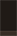

Lint Report
Check performed at Wed Feb 18 12:02:16 EET 2015.
Severity:
Warning
Explanation: ScrollView size validation.
ScrollView children must set their layout_width or layout_height attributes to wrap_content rather than fill_parent or match_parent in the scrolling dimension
More info:
To suppress this error, use the issue id "ScrollViewSize" as explained in the
Suppressing Warnings and Errors section.
../../src/main/java/com/zeus/android/mydeputy/app/ColoredStatusBarActivity.java :24:
Field requires API level 19 (current min is 13): android.view.WindowManager.LayoutParams#FLAG_TRANSLUCENT_STATUS
21 getWindow().setStatusBarColor(getResources().getColor(color));
22 } else if (Build.VERSION.SDK_INT >= Build.VERSION_CODES.KITKAT) {
23 Window w = getWindow();
24 w.setFlags(WindowManager.LayoutParams.FLAG_TRANSLUCENT_STATUS,WindowManager.LayoutParams.FLAG_TRANSLUCENT_STATUS);
25 //status bar height
26 int statusBarHeight = getStatusBarHeight();
Severity:
Warning
Explanation: Using inlined constants on older versions.
This check scans through all the Android API field references in the application and flags certain constants, such as static final integers and Strings, which were introduced in later versions. These will actually be copied into the class files rather than being referenced, which means that the value is available even when running on older devices. In some cases that's fine, and in other cases it can result in a runtime crash or incorrect behavior. It depends on the context, so consider the code carefully and device whether it's safe and can be suppressed or whether the code needs tbe guarded.minSdkVersion in your build.gradle or AndroidManifest.xml files.deliberately accessing newer APIs, and you have ensured (e.g. with conditional execution) that this code will only ever be called on a supported platform, then you can annotate your class or method with the @TargetApi annotation specifying the local minimum SDK to apply, such as @TargetApi(11), such that this check considers 11 rather than your manifest file's minimum SDK as the required API level.
More info:
To suppress this error, use the issue id "InlinedApi" as explained in the
Suppressing Warnings and Errors section.
../../src/main/res/layout/register.xml :7:
Unexpected namespace prefix "xmlns" found for tag LinearLayout
4 android:layout_height="fill_parent"
5 android:fillViewport="true">
6
7 <LinearLayout xmlns:android="http://schemas.android.com/apk/res/android"
8 android:layout_width="match_parent"
9 android:layout_height="wrap_content"
Severity:
Error
Explanation: Missing Android XML namespace.
Most Android views have attributes in the Android namespace. When referencing these attributes you must include the namespace prefix, or your attribute will be interpreted by aapt as just a custom attribute.android: namespace.
More info:
To suppress this error, use the issue id "MissingPrefix" as explained in the
Suppressing Warnings and Errors section.
../../src/main/java/com/zeus/android/mydeputy/app/citizen/main_fragments/AppealFragment.java :93:
Call requires API level 18 (current min is 13): android.widget.ExpandableListView#setIndicatorBoundsRelative
90 mAppealListView.setIndicatorBounds(getDipsFromPixel(16), getDipsFromPixel(46));
91
92 } else {
93 mAppealListView.setIndicatorBoundsRelative(getDipsFromPixel(16), getDipsFromPixel(46));
94 }
95
../../src/main/java/com/zeus/android/mydeputy/app/ColoredStatusBarActivity.java :20:
Call requires API level 21 (current min is 13): android.view.Window#setNavigationBarColor
17 public void setStatusBarColor(View statusBar,int color){
18
19 if (Build.VERSION.SDK_INT >= 21) {
20 getWindow().setNavigationBarColor(getResources().getColor(color));
21 getWindow().setStatusBarColor(getResources().getColor(color));
22 } else if (Build.VERSION.SDK_INT >= Build.VERSION_CODES.KITKAT) {
../../src/main/java/com/zeus/android/mydeputy/app/ColoredStatusBarActivity.java :21:
Call requires API level 21 (current min is 13): android.view.Window#setStatusBarColor
18
19 if (Build.VERSION.SDK_INT >= 21) {
20 getWindow().setNavigationBarColor(getResources().getColor(color));
21 getWindow().setStatusBarColor(getResources().getColor(color));
22 } else if (Build.VERSION.SDK_INT >= Build.VERSION_CODES.KITKAT) {
23 Window w = getWindow();
../../src/main/java/com/zeus/android/mydeputy/app/citizen/main_fragments/ListFragment.java :289:
Call requires API level 18 (current min is 13): android.widget.ExpandableListView#setIndicatorBoundsRelative
286 mDeputyList.setIndicatorBounds(width- getDipsFromPixel(35), width- getDipsFromPixel(5));
287
288 } else {
289 mDeputyList.setIndicatorBoundsRelative(width- getDipsFromPixel(35), width- getDipsFromPixel(5));
290 }
291 }
Severity:
Error
Explanation: Calling new methods on older versions.
This check scans through all the Android API calls in the application and warns about any calls that are not available on all versions targeted by this application (according to its minimum SDK attribute in the manifest).minSdkVersion in your build.gradle or AndroidManifest.xml files.deliberately accessing newer APIs, and you have ensured (e.g. with conditional execution) that this code will only ever be called on a supported platform, then you can annotate your class or method with the @TargetApi annotation specifying the local minimum SDK to apply, such as @TargetApi(11), such that this check considers 11 rather than your manifest file's minimum SDK as the required API level.android: attributes in style definitions, make sure you place this in a values-vNN folder in order to avoid running into runtime conflicts on certain devices where manufacturers have added custom attributes whose ids conflict with the new ones on later platforms.
More info:
To suppress this error, use the issue id "NewApi" as explained in the
Suppressing Warnings and Errors section.
../../src/main/java/com/zeus/android/mydeputy/app/deputy/fragments/AppealAcceptedFragment.java :215:
To get local formatting use getDateInstance(), getDateTimeInstance(), or getTimeInstance(), or use new SimpleDateFormat(String template, Locale locale) with for example Locale.US for ASCII dates.
212 Appeal appeal= (Appeal) getItem(position);
213
214 if(appeal != null){
215 SimpleDateFormat df = new SimpleDateFormat("dd MMM yy");
216 String date = df.format(new Date(appeal.getCreated()*1000));
217
../../src/main/java/com/zeus/android/mydeputy/app/deputy/fragments/AppealNewFragment.java :303:
To get local formatting use getDateInstance(), getDateTimeInstance(), or getTimeInstance(), or use new SimpleDateFormat(String template, Locale locale) with for example Locale.US for ASCII dates.
300 Appeal appeal= (Appeal) getItem(position);
301
302 if(appeal != null){
303 SimpleDateFormat df = new SimpleDateFormat("dd MMM yy");
304 String date = df.format(new Date(appeal.getCreated()*1000));
305
../../src/main/java/com/zeus/android/mydeputy/app/citizen/main_fragments/NewsFragment.java :185:
To get local formatting use getDateInstance(), getDateTimeInstance(), or getTimeInstance(), or use new SimpleDateFormat(String template, Locale locale) with for example Locale.US for ASCII dates.
182 if(news != null) {
183 holder.mHeader.setText(news.getTitle());
184 holder.mText.setText(news.getText());
185 SimpleDateFormat df = new SimpleDateFormat("dd MMM yy");
186 String date = df.format(new Date(news.getCreated()));
187 holder.mDate.setText(date);
../../src/main/java/com/zeus/android/mydeputy/app/deputy/main_fragments/NewsFragment.java :202:
To get local formatting use getDateInstance(), getDateTimeInstance(), or getTimeInstance(), or use new SimpleDateFormat(String template, Locale locale) with for example Locale.US for ASCII dates.
199 if(news != null) {
200 holder.mHeader.setText(news.getTitle());
201 holder.mText.setText(news.getText());
202 SimpleDateFormat df = new SimpleDateFormat("dd MMM yy");
203 String date = df.format(new Date(news.getCreated()*1000));
204 holder.mDate.setText(date);
../../src/main/java/com/zeus/android/mydeputy/app/deputy/NewsSingleActivity.java :148:
To get local formatting use getDateInstance(), getDateTimeInstance(), or getTimeInstance(), or use new SimpleDateFormat(String template, Locale locale) with for example Locale.US for ASCII dates.
145 if(newsComment != null) {
146 mName.setText(newsComment.getAuthorName());
147 mText.setText(newsComment.getCommentText());
148 SimpleDateFormat df = new SimpleDateFormat("dd MMM yy");
149 String date = df.format(new Date(newsComment.getCreated()));
150 mDate.setText(date);
../../src/main/java/com/zeus/android/mydeputy/app/citizen/fragments/NewsSingleCommentFragment.java :138:
To get local formatting use getDateInstance(), getDateTimeInstance(), or getTimeInstance(), or use new SimpleDateFormat(String template, Locale locale) with for example Locale.US for ASCII dates.
135 if(item != null) {
136 holder.mHeader.setText(item.getAuthorName());
137 holder.mText.setText(item.getCommentText());
138 SimpleDateFormat df = new SimpleDateFormat("dd MMM yy");
139 String date = df.format(new Date(item.getCreated()*1000));
140 holder.mDate.setText(date);
Priority: 6 / 10
Severity:
Warning
Explanation: Implied locale in date format.
Almost all callers should use getDateInstance(), getDateTimeInstance(), or getTimeInstance() to get a ready-made instance of SimpleDateFormat suitable for the user's locale. The main reason you'd create an instance this class directly is because you need to format/parse a specific machine-readable format, in which case you almost certainly want to explicitly ask for US to ensure that you get ASCII digits (rather than, say, Arabic digits).
To suppress this error, use the issue id "SimpleDateFormat" as explained in the
Suppressing Warnings and Errors section.
../../src/main/res/layout/simple_load_layout.xml :23:
Attribute textAllCaps is only used in API level 14 and higher (current min is 13)
20 android:text="@string/load_retry"
21 android:background="@android:color/transparent"
22 android:textColor="@color/main"
23 android:textAllCaps="true"
24 android:padding="12dp"
25 />
../../src/main/res/layout/tool_bar.xml :9:
Attribute contentInsetStart is only used in API level 21 and higher (current min is 13)
6 android:layout_width="match_parent"
7 android:layout_height="wrap_content"
8 android:background="@color/main"
9 android:contentInsetStart="72dp"
10 android:contentInsetLeft="72dp"
11 app:contentInsetLeft="72dp"
../../src/main/res/layout/tool_bar.xml :10:
Attribute contentInsetLeft is only used in API level 21 and higher (current min is 13)
7 android:layout_height="wrap_content"
8 android:background="@color/main"
9 android:contentInsetStart="72dp"
10 android:contentInsetLeft="72dp"
11 app:contentInsetLeft="72dp"
12 app:contentInsetStart="72dp"
Priority: 6 / 10
Severity:
Warning
Explanation: Attribute unused on older versions.
This check finds attributes set in XML files that were introduced in a version newer than the oldest version targeted by your application (with the the minSdkVersion attribute).<tag> element in layouts introduced in API 21.
More info:
To suppress this error, use the issue id "UnusedAttribute" as explained in the
Suppressing Warnings and Errors section.
../../src/main/java/com/zeus/android/mydeputy/app/deputy/NewsSingleActivity.java :136:
Avoid passing null as the view root (needed to resolve layout parameters on the inflated layout's root element)
133
134 private void addView(News.NewsComment comment){
135
136 LinearLayout commentView = (LinearLayout) getLayoutInflater().inflate(R.layout.simple_item_three_line, null);
137
138 TextView mName =(TextView)commentView.findViewById(R.id.item_title);
../../src/main/java/com/zeus/android/mydeputy/app/deputy/QuizCreateActivity.java :127:
Avoid passing null as the view root (needed to resolve layout parameters on the inflated layout's root element)
124 }else{
125 // Dynamically add edit text
126 String variantText = editVariant.getText().toString();
127 EditText variant = (EditText)getLayoutInflater().inflate(R.layout.simple_element_edittext, null);
128 variant.setText(variantText);
129 variant.setId(variantCount);
../../src/main/java/com/zeus/android/mydeputy/app/citizen/QuizSingleActivity.java :188:
Avoid passing null as the view root (needed to resolve layout parameters on the inflated layout's root element)
185 private void quizVariantsCreator(List<Quiz.Variant> variants){
186 for (Quiz.Variant variant: variants){
187
188 RadioButton radio = (RadioButton)getLayoutInflater().inflate(R.layout.simple_element_radio_button, null);
189 radio.setText(variant.getText());
190 radio.setId(variant.getVariantId());
Priority: 5 / 10
Severity:
Warning
Explanation: Layout Inflation without a Parent.
When inflating a layout, avoid passing in null as the parent view, since otherwise any layout parameters on the root of the inflated layout will be ignored.
To suppress this error, use the issue id "InflateParams" as explained in the
Suppressing Warnings and Errors section.
../../build.gradle :26:
A newer version of com.android.support:support-v4 than 21.0.0 is available: 21.0.3
23 }
24
25 dependencies {
26 compile 'com.android.support:support-v4:21.0.0'
27 compile 'com.android.support:appcompat-v7:21.0.0'
28 compile 'com.squareup.picasso:picasso:2.4.0'
../../build.gradle :27:
A newer version of com.android.support:appcompat-v7 than 21.0.0 is available: 21.0.3
24
25 dependencies {
26 compile 'com.android.support:support-v4:21.0.0'
27 compile 'com.android.support:appcompat-v7:21.0.0'
28 compile 'com.squareup.picasso:picasso:2.4.0'
29 compile 'com.melnykov:floatingactionbutton:1.1.0'
../../build.gradle :31:
A newer version of com.google.code.gson:gson than 2.2.4 is available: 2.3
28 compile 'com.squareup.picasso:picasso:2.4.0'
29 compile 'com.melnykov:floatingactionbutton:1.1.0'
30 compile 'com.mcxiaoke.volley:library:1.0.+'
31 compile 'com.google.code.gson:gson:2.2.4'
32 }
33
Severity:
Warning
Explanation: Obsolete Gradle Dependency.
This detector looks for usages of libraries where the version you are using is not the current stable release. Using older versions is fine, and there are cases where you deliberately want to stick with an older version. However, you may simply not be aware that a more recent version is available, and that is what this lint check helps find.
More info:
To suppress this error, use the issue id "GradleDependency" as explained in the
Suppressing Warnings and Errors section.
../../build.gradle :30:
Avoid using + in version numbers; can lead to unpredictable and unrepeatable builds (com.mcxiaoke.volley:library:1.0.+)
27 compile 'com.android.support:appcompat-v7:21.0.0'
28 compile 'com.squareup.picasso:picasso:2.4.0'
29 compile 'com.melnykov:floatingactionbutton:1.1.0'
30 compile 'com.mcxiaoke.volley:library:1.0.+'
31 compile 'com.google.code.gson:gson:2.2.4'
32 }
Severity:
Warning
Explanation: Gradle Dynamic Version.
Using + in dependencies lets you automatically pick up the latest available version rather than a specific, named version. However, this is not recommended; your builds are not repeatable; you may have tested with a slightly different version than what the build server used. (Using a dynamic version as the major version number is more problematic than using it in the minor version position.)
More info:
To suppress this error, use the issue id "GradleDynamicVersion" as explained in the
Suppressing Warnings and Errors section.
../../src/main/AndroidManifest.xml :8:
This minSdkVersion value (13) is not used; it is always overridden by the value specified in the Gradle build script (13)
5 android:versionCode="1"
6 android:versionName="1.0" >
7
8 <uses-sdk android:minSdkVersion="13" />
9 <!-- Include following permission if you load images from Internet -->
10 <uses-permission android:name="android.permission.INTERNET" />
Priority: 4 / 10
Severity:
Warning
Explanation: Value overridden by Gradle build script.
The value of (for example) minSdkVersion is only used if it is not specified in the build.gradle build scripts. When specified in the Gradle build scripts, the manifest value is ignored and can be misleading, so should be removed to avoid ambiguity.
More info:
To suppress this error, use the issue id "GradleOverrides" as explained in the
Suppressing Warnings and Errors section.
Priority: 3 / 10
Severity:
Warning
Explanation: Extraneous text in resource files.
Layout resource files should only contain elements and attributes. Any XML text content found in the file is likely accidental (and potentially dangerous if the text resembles XML and the developer believes the text to be functional)
More info:
To suppress this error, use the issue id "ExtraText" as explained in the
Suppressing Warnings and Errors section.
../../src/main/res/layout/login.xml :88:
Should use "sp" instead of "dp" for text sizes
85 android:paddingLeft="20dp"
86 android:paddingRight="20dp"
87 android:textColor="@android:color/white"
88 android:textSize="12dp"
89 android:singleLine="true" />
90
../../src/main/res/layout/login.xml :100:
Should use "sp" instead of "dp" for text sizes
97 android:paddingLeft="22dp"
98 android:paddingRight="22dp"
99 android:textColor="@color/secondary_dark"
100 android:textSize="12dp"
101 android:singleLine="true" />
102
Severity:
Warning
Explanation: Using dp instead of sp for text sizes.
When setting text sizes, you should normally use sp, or "scale-independent pixels". This is like the dp unit, but it is also scaled by the user's font size preference. It is recommend you use this unit when specifying font sizes, so they will be adjusted for both the screen density and the user's preference.are cases where you might need to use dp; typically this happens when the text is in a container with a specific dp-size. This will prevent the text from spilling outside the container. Note however that this means that the user's font size settings are not respected, so consider adjusting the layout itself to be more flexible.
To suppress this error, use the issue id "SpUsage" as explained in the
Suppressing Warnings and Errors section.
../../src/main/res/layout/login.xml :59:
android:password is deprecated: Use inputType instead
56 android:layout_height="wrap_content"
57 android:hint="@string/text_password"
58 android:inputType="textPassword"
59 android:password="true"
60 android:singleLine="true"
61 android:paddingRight="16dp"
../../src/main/res/layout/register.xml :85:
android:password is deprecated: Use inputType instead
82 android:hint="@string/text_password"
83 android:inputType="textPassword"
84 android:paddingRight="16dp"
85 android:password="true"
86 android:singleLine="true"
87 android:textColor="@color/secondary_dark" />
../../src/main/res/layout/register.xml :111:
android:password is deprecated: Use inputType instead
108 android:hint="@string/text_section_name"
109 android:inputType="text"
110 android:paddingRight="16dp"
111 android:password="false"
112 android:singleLine="true"
113 android:textColor="@color/secondary_dark" />
Priority: 2 / 10
Severity:
Warning
Explanation: Using deprecated resources.
Deprecated views, attributes and so on are deprecated because there is a better way to do something. Do it that new way. You've been warned.
More info:
To suppress this error, use the issue id "Deprecated" as explained in the
Suppressing Warnings and Errors section.
../../src/main/AndroidManifest.xml :16:
Should explicitly set android:allowBackup to true or false (it's true by default, and that can have some security implications for the application's data)
13
14 <android:uses-permission android:name="android.permission.READ_PHONE_STATE" />
15
16 <application
17 android:name="com.zeus.android.mydeputy.app.App"
18 android:hardwareAccelerated="true"
Severity:
Warning
Explanation: Missing allowBackup attribute.
The allowBackup attribute determines if an application's data can be backed up and restored. It is documented at
http://developer.android.com/reference/android/R.attr.html#allowBackup
By default, this flag is set to
true. When this flag is set to
true, application data can be backed up and restored by the user using
adb backup and
adb restore.
This may have security consequences for an application.
adb backup allows users who have enabled USB debugging to copy application data off of the device. Once backed up, all application data can be read by the user.
adb restore allows creation of application data from a source specified by the user. Following a restore, applications should not assume that the data, file permissions, and directory permissions were created by the application itself.
Setting
allowBackup="false" opts an application out of both backup and restore.
To fix this warning, decide whether your application should support backup, and explicitly set
android:allowBackup=(true|false)"
To suppress this error, use the issue id "AllowBackup" as explained in the
Suppressing Warnings and Errors section.
../../src/main/java/com/zeus/android/mydeputy/app/ui/ExpandableTextView.java :29:
This TypedArray should be recycled after use with #recycle()
26
27 public ExpandableTextView(Context context, AttributeSet attrs) {
28 super(context, attrs);
29 TypedArray typedArray = context.obtainStyledAttributes(attrs, R.styleable.ExpandableTextView);
30 this.trimLength = typedArray.getInt(R.styleable.ExpandableTextView_trim_length, 150);
31 this.text = typedArray.getString(R.styleable.ExpandableTextView_android_text);
Priority: 7 / 10
Severity:
Warning
Explanation: Missing recycle() calls.
Many resources, such as TypedArrays, VelocityTrackers, etc., should be recycled (with a recycle() call) after use. This lint check looks for missing recycle() calls.
More info:
To suppress this error, use the issue id "Recycle" as explained in the
Suppressing Warnings and Errors section.
../../src/main/res/layout/citizen_main_news_single.xml :17:
Invalid layout param in a FrameLayout: layout_below
14 android:id="@+id/deputy_single_news_text"
15 android:layout_width="match_parent"
16 android:layout_height="wrap_content"
17 android:layout_below="@id/tool_bar"
18 android:visibility="invisible"
19 android:layout_alignParentBottom="true"
../../src/main/res/layout/citizen_main_news_single.xml :19:
Invalid layout param in a FrameLayout: layout_alignParentBottom
16 android:layout_height="wrap_content"
17 android:layout_below="@id/tool_bar"
18 android:visibility="invisible"
19 android:layout_alignParentBottom="true"
20 android:padding="16dp" />
21
../../src/main/res/layout/citizen_main_news_single.xml :28:
Invalid layout param in a FrameLayout: layout_alignParentTop
25 android:layout_height="match_parent"
26 android:gravity="center"
27 android:text="@string/deputy_single_news_wait_text"
28 android:layout_alignParentTop="true"
29 android:layout_alignParentLeft="true"
30 android:layout_alignParentStart="true" />
../../src/main/res/layout/citizen_main_news_single.xml :29:
Invalid layout param in a FrameLayout: layout_alignParentLeft
26 android:gravity="center"
27 android:text="@string/deputy_single_news_wait_text"
28 android:layout_alignParentTop="true"
29 android:layout_alignParentLeft="true"
30 android:layout_alignParentStart="true" />
31
../../src/main/res/layout/citizen_main_news_single.xml :30:
Invalid layout param in a FrameLayout: layout_alignParentStart
27 android:text="@string/deputy_single_news_wait_text"
28 android:layout_alignParentTop="true"
29 android:layout_alignParentLeft="true"
30 android:layout_alignParentStart="true" />
31
32 <com.melnykov.fab.FloatingActionButton
../../src/main/res/layout/citizen_main_news_single.xml :38:
Invalid layout param in a FrameLayout: layout_alignParentBottom
35 android:layout_height="wrap_content"
36 android:layout_gravity="bottom|right"
37 android:layout_margin="16dp"
38 android:layout_alignParentBottom="true"
39 android:layout_alignParentRight="true"
40 android:src="@drawable/ic_action_content_create"
../../src/main/res/layout/citizen_main_news_single.xml :39:
Invalid layout param in a FrameLayout: layout_alignParentRight
36 android:layout_gravity="bottom|right"
37 android:layout_margin="16dp"
38 android:layout_alignParentBottom="true"
39 android:layout_alignParentRight="true"
40 android:src="@drawable/ic_action_content_create"
41 fab:fab_colorNormal="@color/main"
../../src/main/res/layout/deputy_main_quiz_create.xml :25:
Invalid layout param in a FrameLayout: layout_weight
22 android:layout_width="match_parent"
23 android:layout_height="match_parent"
24 android:layout_margin="16dp"
25 android:layout_weight="1"
26 android:orientation="vertical">
27
Severity:
Warning
Explanation: Obsolete layout params.
The given layout_param is not defined for the given layout, meaning it has no effect. This usually happens when you change the parent layout or move view code around without updating the layout params. This will cause useless attribute processing at runtime, and is misleading for others reading the layout so the parameter should be removed.
More info:
To suppress this error, use the issue id "ObsoleteLayoutParam" as explained in the
Suppressing Warnings and Errors section.
../../src/main/res/layout/citizen_main_quiz_single.xml :46:
This tag and its children can be replaced by one <TextView/> and a compound drawable
43 android:id="@+id/deputy_single_quiz_text"
44 android:layout_marginLeft="72dp"
45 android:layout_marginBottom="16dp" />
46 <LinearLayout
47 android:orientation="horizontal"
48 android:layout_width="match_parent"
../../src/main/res/layout/deputy_main_news_single.xml :55:
This tag and its children can be replaced by one <TextView/> and a compound drawable
52 android:text="Small Text"
53 android:textAppearance="?android:attr/textAppearanceSmall" />
54
55 <LinearLayout
56 android:layout_width="fill_parent"
57 android:layout_height="fill_parent"
../../src/main/res/layout/simple_item_single_line_icon.xml :3:
This tag and its children can be replaced by one <TextView/> and a compound drawable
1 <?xml version="1.0" encoding="utf-8"?>
2
3 <LinearLayout xmlns:android="http://schemas.android.com/apk/res/android"
4 android:orientation="horizontal" android:layout_width="match_parent"
5 android:layout_height="wrap_content"
Severity:
Warning
Explanation: Node can be replaced by a TextView with compound drawables.
A LinearLayout which contains an ImageView and a TextView can be more efficiently handled as a compound drawable (a single TextView, using the drawableTop, drawableLeft, drawableRight and/or drawableBottom attributes to draw one or more images adjacent to the text).drawablePadding attribute.
More info:
To suppress this error, use the issue id "UseCompoundDrawables" as explained in the
Suppressing Warnings and Errors section.
Priority: 3 / 10
Severity:
Warning
Explanation: Using FloatMath instead of Math
In older versions of Android, using android.util.FloatMath was recommended for performance reasons when operating on floats. However, on modern hardware doubles are just as fast as float (though they take more memory), and in recent versions of Android, FloatMath is actually slower than using java.lang.Math due to the way the JIT optimizes java.lang.Math. Therefore, you should use Math instead of FloatMath if you are only targeting Froyo and above.
To suppress this error, use the issue id "FloatMath" as explained in the
Suppressing Warnings and Errors section.
../../src/main/res/layout/citizen_main_news_single_comments_feed.xml :12:
Use a layout_height of 0dp instead of wrap_content for better performance
9 <ListView
10 android:id="@+id/deputy_single_news_comments_list"
11 android:layout_width="match_parent"
12 android:layout_height="wrap_content"
13 android:layout_weight="1" />
14
../../src/main/res/layout/citizen_main_news_single_comments_feed.xml :38:
Use a layout_width of 0dp instead of match_parent for better performance
35
36 <EditText
37 android:id="@+id/deputy_single_news_comments_comment_text"
38 android:layout_width="match_parent"
39 android:layout_height="wrap_content"
40 android:hint="@string/deputy_single_news_comment_default_text"
../../src/main/res/layout/deputy_main_quiz_create.xml :72:
Use a layout_width of 0dp instead of match_parent for better performance
69
70 <EditText
71 android:id="@+id/deputy_quiz_new_edit_variant"
72 android:layout_width="match_parent"
73 android:layout_height="wrap_content"
74 android:layout_weight="1"
../../src/main/res/layout/deputy_main_quiz_single_item.xml :17:
Use a layout_width of 0dp instead of fill_parent for better performance
14
15 <LinearLayout
16 android:orientation="vertical"
17 android:layout_width="fill_parent"
18 android:layout_height="fill_parent"
19 android:gravity="center_vertical"
../../src/main/res/layout/simple_item_two_lines_date.xml :13:
Use a layout_width of 0dp instead of fill_parent for better performance
10
11 <LinearLayout
12 android:orientation="vertical"
13 android:layout_width="fill_parent"
14 android:layout_height="wrap_content"
15 android:layout_weight="1">
Severity:
Warning
Explanation: Inefficient layout weight.
When only a single widget in a LinearLayout defines a weight, it is more efficient to assign a width/height of 0dp to it since it will absorb all the remaining space anyway. With a declared width/height of 0dp it does not have to measure its own size first.
More info:
To suppress this error, use the issue id "InefficientWeight" as explained in the
Suppressing Warnings and Errors section.
../../src/main/res/layout/citizen_main.xml :7:
Possible overdraw: Root element paints background @color/background with a theme that also paints a background (inferred theme is @style/AppThemeNoActionBar)
4 android:layout_width="match_parent"
5 android:layout_height="match_parent"
6 android:orientation="vertical"
7 android:background="@color/background">
8
9 <View
../../src/main/res/layout/citizen_main_appeal_create.xml :8:
Possible overdraw: Root element paints background @color/background with a theme that also paints a background (inferred theme is @style/AppThemeNoActionBar)
5 android:layout_width="match_parent"
6 android:layout_height="match_parent"
7 android:orientation="vertical"
8 android:background="@color/background">
9
10 <View
../../src/main/res/layout/citizen_main_news_single_main.xml :7:
Possible overdraw: Root element paints background @color/background with a theme that also paints a background (inferred theme is @style/AppThemeNoActionBar)
4 android:id="@+id/deputy_single_news_layout"
5 android:layout_width="match_parent"
6 android:layout_height="match_parent"
7 android:background="@color/background"
8 android:orientation="vertical">"
9
../../src/main/res/layout/citizen_main_quiz_single.xml :6:
Possible overdraw: Root element paints background @color/background with a theme that also paints a background (inferred theme is @style/AppThemeNoActionBar)
3 android:layout_width="match_parent"
4 android:layout_height="match_parent"
5 android:orientation="vertical"
6 android:background="@color/background">
7
8 <View
../../src/main/res/layout/citizen_navigation_drawer.xml :9:
Possible overdraw: Root element paints background @android:color/white with a theme that also paints a background (inferred theme is @style/AppThemeNoActionBar)
6 android:layout_width="match_parent"
7 android:layout_height="match_parent"
8 tools:context="com.rostdev.navigationdrawerdesign.NavigationDrawerFragment"
9 android:background="@android:color/white"
10 android:orientation="vertical"
11 android:gravity="top">
+ 16 More Occurrences...
../../src/main/res/layout/deputy_main.xml :8:
Possible overdraw: Root element paints background @color/background with a theme that also paints a background (inferred theme is @style/AppThemeNoActionBar)
5 android:layout_height="match_parent"
6 android:orientation="vertical"
7 tools:context="com.zeus.android.mydeputy.app.deputy.DeputyMainActivity"
8 android:background="@color/background">
9
10 <View
../../src/main/res/layout/deputy_main_appeal.xml :6:
Possible overdraw: Root element paints background @color/background with a theme that also paints a background (inferred theme is @style/AppThemeNoActionBar)
3 android:orientation="vertical"
4 android:layout_width="match_parent"
5 android:layout_height="match_parent"
6 android:background="@color/background">
7
8 <FrameLayout
../../src/main/res/layout/deputy_main_appeal_citizen.xml :7:
Possible overdraw: Root element paints background @color/background with a theme that also paints a background (inferred theme is @style/AppThemeNoActionBar)
4 android:orientation="vertical"
5 android:layout_width="match_parent"
6 android:layout_height="match_parent"
7 android:background="@color/background">
8
9 <View
../../src/main/res/layout/deputy_main_appeal_citizen_appeal.xml :10:
Possible overdraw: Root element paints background @color/background with a theme that also paints a background (inferred theme is @style/AppThemeNoActionBar)
7 android:fadingEdge="none"
8 android:fadingEdgeLength="0dp"
9 android:scrollbars="none"
10 android:background="@color/background"/>
../../src/main/res/layout/deputy_main_appeal_citizen_info.xml :5:
Possible overdraw: Root element paints background @color/background with a theme that also paints a background (inferred theme is @style/AppThemeNoActionBar)
2 <LinearLayout xmlns:android="http://schemas.android.com/apk/res/android"
3 android:layout_width="match_parent"
4 android:layout_height="match_parent"
5 android:background="@color/background"
6 android:orientation="horizontal"
7 android:padding="16dp">
../../src/main/res/layout/deputy_main_appeal_citizen_quiz.xml :10:
Possible overdraw: Root element paints background @color/background with a theme that also paints a background (inferred theme is @style/AppThemeNoActionBar)
7 android:fadingEdge="none"
8 android:fadingEdgeLength="0dp"
9 android:scrollbars="none"
10 android:background="@color/background"/>
../../src/main/res/layout/deputy_main_news_create.xml :6:
Possible overdraw: Root element paints background @color/background with a theme that also paints a background (inferred theme is @style/AppThemeNoActionBar)
3 <LinearLayout xmlns:android="http://schemas.android.com/apk/res/android"
4 android:layout_width="match_parent"
5 android:layout_height="match_parent"
6 android:background="@color/background"
7 android:orientation="vertical">
8
../../src/main/res/layout/deputy_main_news_single.xml :6:
Possible overdraw: Root element paints background @color/background with a theme that also paints a background (inferred theme is @style/AppThemeNoActionBar)
3 android:layout_width="match_parent"
4 android:layout_height="match_parent"
5 android:orientation="vertical"
6 android:background="@color/background">
7
8 <View
../../src/main/res/layout/deputy_main_quiz.xml :7:
Possible overdraw: Root element paints background @color/background with a theme that also paints a background (inferred theme is @style/AppThemeNoActionBar)
4 android:orientation="vertical"
5 android:layout_width="match_parent"
6 android:layout_height="match_parent"
7 android:background="@color/background">
8
9
../../src/main/res/layout/deputy_main_quiz_create.xml :6:
Possible overdraw: Root element paints background @color/background with a theme that also paints a background (inferred theme is @style/AppThemeNoActionBar)
3 android:layout_width="match_parent"
4 android:layout_height="match_parent"
5 android:orientation="vertical"
6 android:background="@color/background">
7
8 <View
../../src/main/res/layout/deputy_main_quiz_finished.xml :10:
Possible overdraw: Root element paints background @color/background with a theme that also paints a background (inferred theme is @style/AppThemeNoActionBar)
7 android:fadingEdge="none"
8 android:fadingEdgeLength="0dp"
9 android:scrollbars="none"
10 android:background="@color/background"/>
../../src/main/res/layout/deputy_main_quiz_in_process.xml :10:
Possible overdraw: Root element paints background @color/background with a theme that also paints a background (inferred theme is @style/AppThemeNoActionBar)
7 android:fadingEdge="none"
8 android:fadingEdgeLength="0dp"
9 android:scrollbars="none"
10 android:background="@color/background"/>
../../src/main/res/layout/deputy_main_quiz_single.xml :8:
Possible overdraw: Root element paints background @color/background with a theme that also paints a background (inferred theme is @style/AppThemeNoActionBar)
5 android:layout_width="match_parent"
6 android:layout_height="match_parent"
7 android:orientation="vertical"
8 android:background="@color/background">
9
10 <View
../../src/main/res/layout/main.xml :5:
Possible overdraw: Root element paints background @color/background with a theme that also paints a background (inferred theme is @style/AppThemeNoActionBar)
2 xmlns:tools="http://schemas.android.com/tools"
3 android:layout_width="match_parent"
4 android:layout_height="match_parent"
5 android:background="@color/background"
6 android:gravity="center_vertical|center_horizontal"
7 android:orientation="vertical"
../../src/main/res/layout/simple_text_view.xml :8:
Possible overdraw: Root element paints background @color/background with a theme that also paints a background (inferred theme is @style/AppThemeNoActionBar)
5 android:id="@+id/deputy_info_promises_text"
6 android:textAppearance="?android:attr/textAppearanceSmall"
7 android:padding="16dp"
8 android:background="@color/background"/>
9
../../src/main/res/layout/tool_bar.xml :8:
Possible overdraw: Root element paints background @color/main with a theme that also paints a background (inferred theme is @style/AppThemeNoActionBar)
5 xmlns:app="http://schemas.android.com/apk/res-auto"
6 android:layout_width="match_parent"
7 android:layout_height="wrap_content"
8 android:background="@color/main"
9 android:contentInsetStart="72dp"
10 android:contentInsetLeft="72dp"
Priority: 3 / 10
Severity:
Warning
Explanation: Overdraw: Painting regions more than once.
If you set a background drawable on a root view, then you should use a custom theme where the theme background is null. Otherwise, the theme background will be painted first, only to have your custom background completely cover it; this is called "overdraw".
More info:
To suppress this error, use the issue id "Overdraw" as explained in the
Suppressing Warnings and Errors section.
../../src/main/res/anim/activity_scale_alpha_in.xml :
The resource R.anim.activity_scale_alpha_in appears to be unused
../../src/main/res/anim/activity_scale_alpha_out.xml :
The resource R.anim.activity_scale_alpha_out appears to be unused
../../src/main/res/anim/activity_slide_out_down.xml :
The resource R.anim.activity_slide_out_down appears to be unused
../../src/main/res/anim/activity_slide_out_down_offset.xml :
The resource R.anim.activity_slide_out_down_offset appears to be unused
../../src/main/res/anim/activity_slide_up.xml :
The resource R.anim.activity_slide_up appears to be unused
+ 76 More Occurrences...
../../src/main/res/anim/activity_slide_up_offset.xml :
The resource R.anim.activity_slide_up_offset appears to be unused
../../src/main/res/anim/activity_start_depth_page_in.xml :
The resource R.anim.activity_start_depth_page_in appears to be unused
../../src/main/res/drawable/apptheme_activated_background_holo_light.xml :
The resource R.drawable.apptheme_activated_background_holo_light appears to be unused
../../src/main/res/drawable/apptheme_item_background_holo_light.xml :
The resource R.drawable.apptheme_item_background_holo_light appears to be unused
../../src/main/res/values/arrays.xml :3:
The resource R.array.viewOrDeleteMenuItems appears to be unused
1 <?xml version="1.0" encoding="utf-8"?>
2 <resources>
3 <string-array name="viewOrDeleteMenuItems" >
4 <item>Проглянути</item>
5 <item>Видалити</item>
../../src/main/res/drawable-ldpi/bg.png : 
The resource R.drawable.bg appears to be unused
../../src/main/res/anim/button_animation_slide_left_out_offset.xml :
The resource R.anim.button_animation_slide_left_out_offset appears to be unused
../../src/main/res/anim/button_slide_right_in_offset.xml :
The resource R.anim.button_slide_right_in_offset appears to be unused
../../src/main/res/anim/depth_page_out.xml :
The resource R.anim.depth_page_out appears to be unused
../../src/main/res/menu/deputy_appeal_all_menu.xml :
The resource R.menu.deputy_appeal_all_menu appears to be unused
../../src/main/res/layout/deputy_main.xml :
The resource R.layout.deputy_main appears to be unused
../../src/main/res/layout/deputy_main_appeal_accepted.xml :
The resource R.layout.deputy_main_appeal_accepted appears to be unused
../../src/main/res/layout/deputy_main_appeal_new_chooser.xml :
The resource R.layout.deputy_main_appeal_new_chooser appears to be unused
../../src/main/res/menu/deputy_news_menu.xml :
The resource R.menu.deputy_news_menu appears to be unused
../../src/main/res/anim/dialog_slide_left_out.xml :
The resource R.anim.dialog_slide_left_out appears to be unused
../../src/main/res/anim/dialog_slide_out_down.xml :
The resource R.anim.dialog_slide_out_down appears to be unused
../../src/main/res/anim/dialog_slide_right_in.xml :
The resource R.anim.dialog_slide_right_in appears to be unused
../../src/main/res/anim/dialog_slide_up.xml :
The resource R.anim.dialog_slide_up appears to be unused
../../src/main/res/values/dimens.xml :4:
The resource R.dimen.add_appeal_leftrightmargin appears to be unused
1 <?xml version="1.0" encoding="utf-8"?>
2 <resources>
3
4 <dimen name="add_appeal_leftrightmargin">16dp</dimen>
5 <dimen name="add_appeal_header_bottomargim">32dp</dimen>
6 <dimen name="activity_horizontal_margin">16dp</dimen>
../../src/main/res/values/dimens.xml :6:
The resource R.dimen.activity_horizontal_margin appears to be unused
3
4 <dimen name="add_appeal_leftrightmargin">16dp</dimen>
5 <dimen name="add_appeal_header_bottomargim">32dp</dimen>
6 <dimen name="activity_horizontal_margin">16dp</dimen>
7 <dimen name="activity_vertical_margin">16dp</dimen>
8 <dimen name="text_size_medium">12sp</dimen>
../../src/main/res/values/dimens.xml :7:
The resource R.dimen.activity_vertical_margin appears to be unused
4 <dimen name="add_appeal_leftrightmargin">16dp</dimen>
5 <dimen name="add_appeal_header_bottomargim">32dp</dimen>
6 <dimen name="activity_horizontal_margin">16dp</dimen>
7 <dimen name="activity_vertical_margin">16dp</dimen>
8 <dimen name="text_size_medium">12sp</dimen>
9
../../src/main/res/values/dimens.xml :8:
The resource R.dimen.text_size_medium appears to be unused
5 <dimen name="add_appeal_header_bottomargim">32dp</dimen>
6 <dimen name="activity_horizontal_margin">16dp</dimen>
7 <dimen name="activity_vertical_margin">16dp</dimen>
8 <dimen name="text_size_medium">12sp</dimen>
9
10 <dimen name="padding">16dp</dimen>
../../src/main/res/values/dimens.xml :10:
The resource R.dimen.padding appears to be unused
7 <dimen name="activity_vertical_margin">16dp</dimen>
8 <dimen name="text_size_medium">12sp</dimen>
9
10 <dimen name="padding">16dp</dimen>
11
12 </resources>
../../src/main/res/anim/enter_from_bottom.xml :
The resource R.anim.enter_from_bottom appears to be unused
../../src/main/res/anim/enter_from_right.xml :
The resource R.anim.enter_from_right appears to be unused
../../src/main/res/anim/exit_to_bottom.xml :
The resource R.anim.exit_to_bottom appears to be unused
../../src/main/res/anim/exit_to_right.xml :
The resource R.anim.exit_to_right appears to be unused
../../src/main/res/anim/fragment_start_depth_page_in.xml :
The resource R.anim.fragment_start_depth_page_in appears to be unused
../../src/main/res/drawable-hdpi/ic_action_info.png :
The resource R.drawable.ic_action_info appears to be unused
+ 3 Additional Locations...
../../src/main/res/drawable-hdpi/ic_communication_comment_blue.png :
The resource R.drawable.ic_communication_comment_blue appears to be unused
+ 3 Additional Locations...
../../src/main/res/drawable/shadow.xml :
The resource R.drawable.shadow appears to be unused
../../src/main/res/values/strings.xml :5:
The resource R.string.button_register_text appears to be unused
2 <resources>
3
4 <string name="app_name">Мій Депутат</string>
5 <string name="button_register_text">Регістрація</string>
6 <string name="text_register">Регістрація</string>
7 <string name="progress_text_register">Регістрація...</string>
../../src/main/res/values/strings.xml :7:
The resource R.string.progress_text_register appears to be unused
4 <string name="app_name">Мій Депутат</string>
5 <string name="button_register_text">Регістрація</string>
6 <string name="text_register">Регістрація</string>
7 <string name="progress_text_register">Регістрація...</string>
8 <string name="text_login">Вхід</string>
9 <string name="progress_text_login">Вхід...</string>
../../src/main/res/values/strings.xml :9:
The resource R.string.progress_text_login appears to be unused
6 <string name="text_register">Регістрація</string>
7 <string name="progress_text_register">Регістрація...</string>
8 <string name="text_login">Вхід</string>
9 <string name="progress_text_login">Вхід...</string>
10 <string name="text_not_registered">Створити новий аккаунт</string>
11 <string name="button_login_text">УВІЙТИ</string>
../../src/main/res/values/strings.xml :10:
The resource R.string.text_not_registered appears to be unused
7 <string name="progress_text_register">Регістрація...</string>
8 <string name="text_login">Вхід</string>
9 <string name="progress_text_login">Вхід...</string>
10 <string name="text_not_registered">Створити новий аккаунт</string>
11 <string name="button_login_text">УВІЙТИ</string>
12 <string name="text_email">Email</string>
../../src/main/res/values/strings.xml :18:
The resource R.string.text_has_account appears to be unused
15 <string name="button_reg_text">ЗАРЕЄСТРУВАТИСЯ</string>
16 <string name="radio_text_deputy">Я депутат</string>
17 <string name="radio_text_citizen">Я громадянин</string>
18 <string name="text_has_account">Я вже зареєстрований! Увійти.</string>
19 <string name="text_section_name">Назва партії</string>
20 <string name="text_alert_user_not_selected">Ви депутат чи громадянин?</string>
../../src/main/res/values/strings.xml :20:
The resource R.string.text_alert_user_not_selected appears to be unused
17 <string name="radio_text_citizen">Я громадянин</string>
18 <string name="text_has_account">Я вже зареєстрований! Увійти.</string>
19 <string name="text_section_name">Назва партії</string>
20 <string name="text_alert_user_not_selected">Ви депутат чи громадянин?</string>
21 <string name="deputy_info_windowheadertext">Інформація про депутата</string>
22 <string name="deputy_info_program_tab">Програма депутата</string>
../../src/main/res/values/strings.xml :21:
The resource R.string.deputy_info_windowheadertext appears to be unused
18 <string name="text_has_account">Я вже зареєстрований! Увійти.</string>
19 <string name="text_section_name">Назва партії</string>
20 <string name="text_alert_user_not_selected">Ви депутат чи громадянин?</string>
21 <string name="deputy_info_windowheadertext">Інформація про депутата</string>
22 <string name="deputy_info_program_tab">Програма депутата</string>
23 <string name="deputy_info_promises_tab">Обіцянки депутата</string>
../../src/main/res/values/strings.xml :24:
The resource R.string.deputy_info_current_activities_tab appears to be unused
21 <string name="deputy_info_windowheadertext">Інформація про депутата</string>
22 <string name="deputy_info_program_tab">Програма депутата</string>
23 <string name="deputy_info_promises_tab">Обіцянки депутата</string>
24 <string name="deputy_info_current_activities_tab">Поточна діяльність</string>
25 <string name="deputy_info_contacts_tab">Контакти</string>
26 <string name="deputy_single_news_addcomment_text">Додати коментар</string>
../../src/main/res/values/strings.xml :26:
The resource R.string.deputy_single_news_addcomment_text appears to be unused
23 <string name="deputy_info_promises_tab">Обіцянки депутата</string>
24 <string name="deputy_info_current_activities_tab">Поточна діяльність</string>
25 <string name="deputy_info_contacts_tab">Контакти</string>
26 <string name="deputy_single_news_addcomment_text">Додати коментар</string>
27 <string name="deputy_single_news_wait_text">Зачекайте, поки завантажується текст новини та коментарі...</string>
28 <string name="deputy_single_news_comment_default_text">Текст коментарю</string>
../../src/main/res/values/strings.xml :29:
The resource R.string.deputy_single_news_comment_default_name appears to be unused
26 <string name="deputy_single_news_addcomment_text">Додати коментар</string>
27 <string name="deputy_single_news_wait_text">Зачекайте, поки завантажується текст новини та коментарі...</string>
28 <string name="deputy_single_news_comment_default_text">Текст коментарю</string>
29 <string name="deputy_single_news_comment_default_name">Ім\'я</string>
30 <string name="deputy_quiz_list_windowheader_text">Опитування</string>
31 <string name="deputy_quiz_list_wait_text">Зачекайте завантаження списку опитувань...</string>
../../src/main/res/values/strings.xml :30:
The resource R.string.deputy_quiz_list_windowheader_text appears to be unused
27 <string name="deputy_single_news_wait_text">Зачекайте, поки завантажується текст новини та коментарі...</string>
28 <string name="deputy_single_news_comment_default_text">Текст коментарю</string>
29 <string name="deputy_single_news_comment_default_name">Ім\'я</string>
30 <string name="deputy_quiz_list_windowheader_text">Опитування</string>
31 <string name="deputy_quiz_list_wait_text">Зачекайте завантаження списку опитувань...</string>
32 <string name="deputy_appeals_add_appeal">Додати звернення</string>
../../src/main/res/values/strings.xml :31:
The resource R.string.deputy_quiz_list_wait_text appears to be unused
28 <string name="deputy_single_news_comment_default_text">Текст коментарю</string>
29 <string name="deputy_single_news_comment_default_name">Ім\'я</string>
30 <string name="deputy_quiz_list_windowheader_text">Опитування</string>
31 <string name="deputy_quiz_list_wait_text">Зачекайте завантаження списку опитувань...</string>
32 <string name="deputy_appeals_add_appeal">Додати звернення</string>
33 <string name="deputy_appeals_my_appeals">Мої звернення</string>
../../src/main/res/values/strings.xml :32:
The resource R.string.deputy_appeals_add_appeal appears to be unused
29 <string name="deputy_single_news_comment_default_name">Ім\'я</string>
30 <string name="deputy_quiz_list_windowheader_text">Опитування</string>
31 <string name="deputy_quiz_list_wait_text">Зачекайте завантаження списку опитувань...</string>
32 <string name="deputy_appeals_add_appeal">Додати звернення</string>
33 <string name="deputy_appeals_my_appeals">Мої звернення</string>
34 <string name="deputy_appeals_rate_appeals">Оцінка звернень</string>
../../src/main/res/values/strings.xml :33:
The resource R.string.deputy_appeals_my_appeals appears to be unused
30 <string name="deputy_quiz_list_windowheader_text">Опитування</string>
31 <string name="deputy_quiz_list_wait_text">Зачекайте завантаження списку опитувань...</string>
32 <string name="deputy_appeals_add_appeal">Додати звернення</string>
33 <string name="deputy_appeals_my_appeals">Мої звернення</string>
34 <string name="deputy_appeals_rate_appeals">Оцінка звернень</string>
35 <string name="create_text">СТВОРИТИ</string>
../../src/main/res/values/strings.xml :34:
The resource R.string.deputy_appeals_rate_appeals appears to be unused
31 <string name="deputy_quiz_list_wait_text">Зачекайте завантаження списку опитувань...</string>
32 <string name="deputy_appeals_add_appeal">Додати звернення</string>
33 <string name="deputy_appeals_my_appeals">Мої звернення</string>
34 <string name="deputy_appeals_rate_appeals">Оцінка звернень</string>
35 <string name="create_text">СТВОРИТИ</string>
36 <string name="appeal_reject_text">ВІДХИЛИТИ</string>
../../src/main/res/values/strings.xml :35:
The resource R.string.create_text appears to be unused
32 <string name="deputy_appeals_add_appeal">Додати звернення</string>
33 <string name="deputy_appeals_my_appeals">Мої звернення</string>
34 <string name="deputy_appeals_rate_appeals">Оцінка звернень</string>
35 <string name="create_text">СТВОРИТИ</string>
36 <string name="appeal_reject_text">ВІДХИЛИТИ</string>
37 <string name="deputy_appeals_rate_button_text">Оцінити</string>
../../src/main/res/values/strings.xml :37:
The resource R.string.deputy_appeals_rate_button_text appears to be unused
34 <string name="deputy_appeals_rate_appeals">Оцінка звернень</string>
35 <string name="create_text">СТВОРИТИ</string>
36 <string name="appeal_reject_text">ВІДХИЛИТИ</string>
37 <string name="deputy_appeals_rate_button_text">Оцінити</string>
38 <string name="appeals_text">Звернення</string>
39 <string name="quiz_text">Опитування</string>
../../src/main/res/values/strings.xml :40:
The resource R.string.my_activity_text appears to be unused
37 <string name="deputy_appeals_rate_button_text">Оцінити</string>
38 <string name="appeals_text">Звернення</string>
39 <string name="quiz_text">Опитування</string>
40 <string name="my_activity_text">Моя діяльність</string>
41 <string name="all_appeals_text">Всі звернення</string>
42 <string name="new_appeals_text">Перегляд нових</string>
../../src/main/res/values/strings.xml :41:
The resource R.string.all_appeals_text appears to be unused
38 <string name="appeals_text">Звернення</string>
39 <string name="quiz_text">Опитування</string>
40 <string name="my_activity_text">Моя діяльність</string>
41 <string name="all_appeals_text">Всі звернення</string>
42 <string name="new_appeals_text">Перегляд нових</string>
43 <string name="view_text">Переглянути</string>
../../src/main/res/values/strings.xml :42:
The resource R.string.new_appeals_text appears to be unused
39 <string name="quiz_text">Опитування</string>
40 <string name="my_activity_text">Моя діяльність</string>
41 <string name="all_appeals_text">Всі звернення</string>
42 <string name="new_appeals_text">Перегляд нових</string>
43 <string name="view_text">Переглянути</string>
44 <string name="view_voter_info_text">Інфо виборця</string>
../../src/main/res/values/strings.xml :44:
The resource R.string.view_voter_info_text appears to be unused
41 <string name="all_appeals_text">Всі звернення</string>
42 <string name="new_appeals_text">Перегляд нових</string>
43 <string name="view_text">Переглянути</string>
44 <string name="view_voter_info_text">Інфо виборця</string>
45 <string name="accept_text">ПРИЙНЯТИ</string>
46 <string name="in_process_text">В процесі</string>
../../src/main/res/values/strings.xml :46:
The resource R.string.in_process_text appears to be unused
43 <string name="view_text">Переглянути</string>
44 <string name="view_voter_info_text">Інфо виборця</string>
45 <string name="accept_text">ПРИЙНЯТИ</string>
46 <string name="in_process_text">В процесі</string>
47 <string name="finished_text">Закінчені</string>
48 <string name="remove_text">Видалити</string>
../../src/main/res/values/strings.xml :47:
The resource R.string.finished_text appears to be unused
44 <string name="view_voter_info_text">Інфо виборця</string>
45 <string name="accept_text">ПРИЙНЯТИ</string>
46 <string name="in_process_text">В процесі</string>
47 <string name="finished_text">Закінчені</string>
48 <string name="remove_text">Видалити</string>
49 <string name="add_news_text">Додати новину</string>
../../src/main/res/values/strings.xml :49:
The resource R.string.add_news_text appears to be unused
46 <string name="in_process_text">В процесі</string>
47 <string name="finished_text">Закінчені</string>
48 <string name="remove_text">Видалити</string>
49 <string name="add_news_text">Додати новину</string>
50 <string name="view_news_comments_text">Переглянути коментарі</string>
51 <string name="add_variants_text">Додати варіанти</string>
../../src/main/res/values/strings.xml :50:
The resource R.string.view_news_comments_text appears to be unused
47 <string name="finished_text">Закінчені</string>
48 <string name="remove_text">Видалити</string>
49 <string name="add_news_text">Додати новину</string>
50 <string name="view_news_comments_text">Переглянути коментарі</string>
51 <string name="add_variants_text">Додати варіанти</string>
52 <string name="finish_date_text">Дата закінчення</string>
../../src/main/res/values/strings.xml :51:
The resource R.string.add_variants_text appears to be unused
48 <string name="remove_text">Видалити</string>
49 <string name="add_news_text">Додати новину</string>
50 <string name="view_news_comments_text">Переглянути коментарі</string>
51 <string name="add_variants_text">Додати варіанти</string>
52 <string name="finish_date_text">Дата закінчення</string>
53 <string name="back_text">НАЗАД</string>
../../src/main/res/values/strings.xml :52:
The resource R.string.finish_date_text appears to be unused
49 <string name="add_news_text">Додати новину</string>
50 <string name="view_news_comments_text">Переглянути коментарі</string>
51 <string name="add_variants_text">Додати варіанти</string>
52 <string name="finish_date_text">Дата закінчення</string>
53 <string name="back_text">НАЗАД</string>
54 <string name="enter_next_variant_text">Введіть текст варіанту </string>
../../src/main/res/values/strings.xml :53:
The resource R.string.back_text appears to be unused
50 <string name="view_news_comments_text">Переглянути коментарі</string>
51 <string name="add_variants_text">Додати варіанти</string>
52 <string name="finish_date_text">Дата закінчення</string>
53 <string name="back_text">НАЗАД</string>
54 <string name="enter_next_variant_text">Введіть текст варіанту </string>
55 <string name="btn_choose">ОБРАТИ</string>
../../src/main/res/values/strings.xml :54:
The resource R.string.enter_next_variant_text appears to be unused
51 <string name="add_variants_text">Додати варіанти</string>
52 <string name="finish_date_text">Дата закінчення</string>
53 <string name="back_text">НАЗАД</string>
54 <string name="enter_next_variant_text">Введіть текст варіанту </string>
55 <string name="btn_choose">ОБРАТИ</string>
56 <string name="txt_information_deputy">Інформація</string>
../../src/main/res/values/strings.xml :56:
The resource R.string.txt_information_deputy appears to be unused
53 <string name="back_text">НАЗАД</string>
54 <string name="enter_next_variant_text">Введіть текст варіанту </string>
55 <string name="btn_choose">ОБРАТИ</string>
56 <string name="txt_information_deputy">Інформація</string>
57 <string name="txt_appeal">Звернення</string>
58 <string name="txt_quiz">Опитування</string>
../../src/main/res/values/strings.xml :59:
The resource R.string.txt_quiz_new appears to be unused
56 <string name="txt_information_deputy">Інформація</string>
57 <string name="txt_appeal">Звернення</string>
58 <string name="txt_quiz">Опитування</string>
59 <string name="txt_quiz_new">Новe опитування</string>
60 <string name="txt_quiz_in_process">В процесі</string>
61 <string name="txt_quiz_finished">Закінчені</string>
../../src/main/res/values/strings.xml :62:
The resource R.string.txt_news appears to be unused
59 <string name="txt_quiz_new">Новe опитування</string>
60 <string name="txt_quiz_in_process">В процесі</string>
61 <string name="txt_quiz_finished">Закінчені</string>
62 <string name="txt_news">Моя діяльність</string>
63
64 <string name="txt_quiz_title">Заголовок опитування</string>
../../src/main/res/values/strings.xml :75:
The resource R.string.txt_quiz_date_error appears to be unused
72 <string name="txt_quiz_title_error">Будьласка введіть заголовок опитування</string>
73 <string name="txt_quiz_text_error">Будьласка введіть текст опитування</string>
74 <string name="txt_quiz_variant_number_error">Будьласка два або більше варіантів відповіді</string>
75 <string name="txt_quiz_date_error">Будьласка додайте дату закінчення голосування</string>
76 <string name="party_error">Поле партія обов\'язкове для заповнення</string>
77 <string name="password_error">Будьласка заповність поре пароль</string>
../../src/main/res/values/strings.xml :76:
The resource R.string.party_error appears to be unused
73 <string name="txt_quiz_text_error">Будьласка введіть текст опитування</string>
74 <string name="txt_quiz_variant_number_error">Будьласка два або більше варіантів відповіді</string>
75 <string name="txt_quiz_date_error">Будьласка додайте дату закінчення голосування</string>
76 <string name="party_error">Поле партія обов\'язкове для заповнення</string>
77 <string name="password_error">Будьласка заповність поре пароль</string>
78 <string name="name_error">Поле ім\'я обов\'язкове для заповнення</string>
../../src/main/res/values/strings.xml :78:
The resource R.string.name_error appears to be unused
75 <string name="txt_quiz_date_error">Будьласка додайте дату закінчення голосування</string>
76 <string name="party_error">Поле партія обов\'язкове для заповнення</string>
77 <string name="password_error">Будьласка заповність поре пароль</string>
78 <string name="name_error">Поле ім\'я обов\'язкове для заповнення</string>
79 <string name="email_error">Будьласка заповніть поле пошта</string>
80 <string name="role_error">оберіть вашу соціальну роль</string>
../../src/main/res/values/strings.xml :88:
The resource R.string.txt_save appears to be unused
85 <string name="txt_appeal_chooser">Оберіть відповідального:</string>
86
87
88 <string name="txt_save">ЗБЕРЕГТИ</string>
89 <string name="txt_cancel">ВІДМІНИТИ</string>
90 <string name="txt_close">ЗАКРИТИ</string>
../../src/main/res/values/strings.xml :102:
The resource R.string.txt_citizen_appeal_new_ appears to be unused
99
100 <string name="txt_citizen_appeal_new_title">Заголовок звернення</string>
101 <string name="txt_citizen_appeal_new_text">Текст звернення</string>
102 <string name="txt_citizen_appeal_new_">Нове звернення</string>
103
104 <string name="txt_load_register">Реєстрація...</string>
../../src/main/res/values/strings.xml :109:
The resource R.string.txt_load_news appears to be unused
106 <string name="txt_load_create_appeal">Створення нового звернення..</string>
107 <string name="txt_load_create_news">Завантаження новини..</string>
108 <string name="txt_load_create_quiz">Створення нового опитування..</string>
109 <string name="txt_load_news">Завантаження новини..</string>
110 <string name="txt_load_quiz">Завантаження опитування..</string>
111 <string name="txt_load_citizen_info">Завантаження информації про виборця..</string>
../../src/main/res/values/strings.xml :110:
The resource R.string.txt_load_quiz appears to be unused
107 <string name="txt_load_create_news">Завантаження новини..</string>
108 <string name="txt_load_create_quiz">Створення нового опитування..</string>
109 <string name="txt_load_news">Завантаження новини..</string>
110 <string name="txt_load_quiz">Завантаження опитування..</string>
111 <string name="txt_load_citizen_info">Завантаження информації про виборця..</string>
112
../../src/main/res/values/strings.xml :111:
The resource R.string.txt_load_citizen_info appears to be unused
108 <string name="txt_load_create_quiz">Створення нового опитування..</string>
109 <string name="txt_load_news">Завантаження новини..</string>
110 <string name="txt_load_quiz">Завантаження опитування..</string>
111 <string name="txt_load_citizen_info">Завантаження информації про виборця..</string>
112
113 <string name="txt_create_news">Додати новини</string>
../../src/main/res/values/strings.xml :114:
The resource R.string.txt_create_quiz appears to be unused
111 <string name="txt_load_citizen_info">Завантаження информації про виборця..</string>
112
113 <string name="txt_create_news">Додати новини</string>
114 <string name="txt_create_quiz">Додати звернення</string>
115 <string name="txt_stay_login">Зберегти</string>
116
../../src/main/res/values/strings.xml :117:
The resource R.string.txt_deputyList_empty appears to be unused
114 <string name="txt_create_quiz">Додати звернення</string>
115 <string name="txt_stay_login">Зберегти</string>
116
117 <string name="txt_deputyList_empty">Тут буде відображатись список депутатів</string>
118 <string name="txt_appealList_empty">Тут буде відображатися список запитів Вашому депутату</string>
119
../../src/main/res/values/strings.xml :118:
The resource R.string.txt_appealList_empty appears to be unused
115 <string name="txt_stay_login">Зберегти</string>
116
117 <string name="txt_deputyList_empty">Тут буде відображатись список депутатів</string>
118 <string name="txt_appealList_empty">Тут буде відображатися список запитів Вашому депутату</string>
119
120
../../src/main/res/values/strings.xml :131:
The resource R.string.load_error appears to be unused
128 <string name="drawer_close">Close</string>
129
130 <string name="load_retry">Повторити</string>
131 <string name="load_error">Не вдалося зеднатися з сервером, перевірте підключення до інтернету.</string>
132
133 </resources>
../../src/main/res/anim/view_slide_out_down.xml :
The resource R.anim.view_slide_out_down appears to be unused
Priority: 3 / 10
Severity:
Warning
Explanation: Unused resources.
Unused resources make applications larger and slow down builds.
More info:
To suppress this error, use the issue id "UnusedResources" as explained in the
Suppressing Warnings and Errors section.
../../src/main/res/layout/citizen_main_news_single.xml :9:
This FrameLayout layout or its LinearLayout parent is useless
6 android:layout_height="match_parent"
7 xmlns:fab="http://schemas.android.com/apk/res-auto">
8
9 <FrameLayout
10 android:layout_width="fill_parent"
11 android:layout_height="fill_parent">
../../src/main/res/layout/deputy_main_appeal.xml :8:
This FrameLayout layout or its LinearLayout parent is useless; transfer the background attribute to the other view
5 android:layout_height="match_parent"
6 android:background="@color/background">
7
8 <FrameLayout
9 android:layout_width="fill_parent"
10 android:layout_height="fill_parent">
../../src/main/res/layout/deputy_main_quiz.xml :10:
This FrameLayout layout or its LinearLayout parent is useless; transfer the background attribute to the other view
7 android:background="@color/background">
8
9
10 <FrameLayout
11 android:layout_width="fill_parent"
12 android:layout_height="fill_parent">
Severity:
Warning
Explanation: Useless parent layout.
A layout with children that has no siblings, is not a scrollview or a root layout, and does not have a background, can be removed and have its children moved directly into the parent for a flatter and more efficient layout hierarchy.
More info:
To suppress this error, use the issue id "UselessParent" as explained in the
Suppressing Warnings and Errors section.
../../src/main/res/values/strings.xml :7:
Replace "..." with ellipsis character (…, …) ?
4 <string name="app_name">Мій Депутат</string>
5 <string name="button_register_text">Регістрація</string>
6 <string name="text_register">Регістрація</string>
7 <string name="progress_text_register">Регістрація...</string>
8 <string name="text_login">Вхід</string>
9 <string name="progress_text_login">Вхід...</string>
../../src/main/res/values/strings.xml :9:
Replace "..." with ellipsis character (…, …) ?
6 <string name="text_register">Регістрація</string>
7 <string name="progress_text_register">Регістрація...</string>
8 <string name="text_login">Вхід</string>
9 <string name="progress_text_login">Вхід...</string>
10 <string name="text_not_registered">Створити новий аккаунт</string>
11 <string name="button_login_text">УВІЙТИ</string>
../../src/main/res/values/strings.xml :27:
Replace "..." with ellipsis character (…, …) ?
24 <string name="deputy_info_current_activities_tab">Поточна діяльність</string>
25 <string name="deputy_info_contacts_tab">Контакти</string>
26 <string name="deputy_single_news_addcomment_text">Додати коментар</string>
27 <string name="deputy_single_news_wait_text">Зачекайте, поки завантажується текст новини та коментарі...</string>
28 <string name="deputy_single_news_comment_default_text">Текст коментарю</string>
29 <string name="deputy_single_news_comment_default_name">Ім\'я</string>
../../src/main/res/values/strings.xml :31:
Replace "..." with ellipsis character (…, …) ?
28 <string name="deputy_single_news_comment_default_text">Текст коментарю</string>
29 <string name="deputy_single_news_comment_default_name">Ім\'я</string>
30 <string name="deputy_quiz_list_windowheader_text">Опитування</string>
31 <string name="deputy_quiz_list_wait_text">Зачекайте завантаження списку опитувань...</string>
32 <string name="deputy_appeals_add_appeal">Додати звернення</string>
33 <string name="deputy_appeals_my_appeals">Мої звернення</string>
../../src/main/res/values/strings.xml :104:
Replace "..." with ellipsis character (…, …) ?
101 <string name="txt_citizen_appeal_new_text">Текст звернення</string>
102 <string name="txt_citizen_appeal_new_">Нове звернення</string>
103
104 <string name="txt_load_register">Реєстрація...</string>
105 <string name="txt_load_login">Авторизація...</string>
106 <string name="txt_load_create_appeal">Створення нового звернення..</string>
../../src/main/res/values/strings.xml :105:
Replace "..." with ellipsis character (…, …) ?
102 <string name="txt_citizen_appeal_new_">Нове звернення</string>
103
104 <string name="txt_load_register">Реєстрація...</string>
105 <string name="txt_load_login">Авторизація...</string>
106 <string name="txt_load_create_appeal">Створення нового звернення..</string>
107 <string name="txt_load_create_news">Завантаження новини..</string>
Severity:
Warning
Explanation: Ellipsis string can be replaced with ellipsis character.
You can replace the string "..." with a dedicated ellipsis character, ellipsis character (…, …). This can help make the text more readable.
To suppress this error, use the issue id "TypographyEllipsis" as explained in the
Suppressing Warnings and Errors section.
Priority: 6 / 10
Severity:
Warning
Explanation: Icon colors do not follow the recommended visual style.
Notification icons and Action Bar icons should only white and shades of gray. See the Android Design Guide for more details. Note that the way Lint decides whether an icon is an action bar icon or a notification icon is based on the filename prefix:
ic_menu_ for action bar icons,
ic_stat_ for notification icons etc. These correspond to the naming conventions documented in
http://developer.android.com/guide/practices/ui_guidelines/icon_design.html
To suppress this error, use the issue id "IconColors" as explained in the
Suppressing Warnings and Errors section.
Priority: 4 / 10
Severity:
Warning
Explanation: Icon densities validation.
Icons will look best if a custom version is provided for each of the major screen density classes (low, medium, high, extra high). This lint check identifies icons which do not have complete coverage across the densities.
Low density is not really used much anymore, so this check ignores the ldpi density. To force lint to include it, set the environment variable
ANDROID_LINT_INCLUDE_LDPI=true. For more information on current density usage, see
http://developer.android.com/resources/dashboard/screens.html
To suppress this error, use the issue id "IconDensities" as explained in the
Suppressing Warnings and Errors section.
Priority: 3 / 10
Severity:
Warning
Explanation: Duplicated icons under different names.
If an icon is repeated under different names, you can consolidate and just use one of the icons and delete the others to make your application smaller. However, duplicated icons usually are not intentional and can sometimes point to icons that were accidentally overwritten or accidentally not updated.
More info:
To suppress this error, use the issue id "IconDuplicates" as explained in the
Suppressing Warnings and Errors section.
Priority: 3 / 10
Severity:
Warning
Explanation: Missing density folder.
Icons will look best if a custom version is provided for each of the major screen density classes (low, medium, high, extra-high, extra-extra-high). This lint check identifies folders which are missing, such as
drawable-hdpi.
Low density is not really used much anymore, so this check ignores the ldpi density. To force lint to include it, set the environment variable
ANDROID_LINT_INCLUDE_LDPI=true. For more information on current density usage, see
http://developer.android.com/resources/dashboard/screens.html
To suppress this error, use the issue id "IconMissingDensityFolder" as explained in the
Suppressing Warnings and Errors section.
../../src/main/res/layout/deputy_main_appeal_new_chooser.xml :34:
Buttons in button bars should be borderless; use style="?android:attr/buttonBarButtonStyle" (and ?android:attr/buttonBarStyle on the parent)
31 android:gravity="right"
32 android:orientation="horizontal">
33
34 <Button
35 android:id="@+id/deputy_appeal_new_chooser_btn_cancel"
36 android:layout_width="wrap_content"
../../src/main/res/layout/deputy_main_appeal_new_chooser.xml :44:
Buttons in button bars should be borderless; use style="?android:attr/buttonBarButtonStyle" (and ?android:attr/buttonBarStyle on the parent)
41 android:text="@string/txt_cancel"
42 android:textColor="@color/secondary_dark" />
43
44 <Button
45 android:id="@+id/deputy_appeal_new_chooser_btn_choose"
46 android:layout_width="wrap_content"
../../src/main/res/layout/deputy_main_appeal_review.xml :42:
Buttons in button bars should be borderless; use style="?android:attr/buttonBarButtonStyle" (and ?android:attr/buttonBarStyle on the parent)
39 android:gravity="right"
40 android:orientation="horizontal">
41
42 <Button
43 android:id="@+id/deputy_appeal_new_review_btn_reject"
44 android:layout_width="wrap_content"
../../src/main/res/layout/deputy_main_appeal_review.xml :53:
Buttons in button bars should be borderless; use style="?android:attr/buttonBarButtonStyle" (and ?android:attr/buttonBarStyle on the parent)
50 android:textColor="@color/secondary_dark"
51 android:textSize="14sp" />
52
53 <Button
54 android:id="@+id/deputy_appeal_new_review_btn_accept"
55 android:layout_width="wrap_content"
../../src/main/res/layout/login.xml :79:
Buttons in button bars should be borderless; use style="?android:attr/buttonBarButtonStyle" (and ?android:attr/buttonBarStyle on the parent)
76 android:layout_height="fill_parent"
77 android:layout_marginLeft="48dp">
78
79 <Button
80 android:id="@+id/button_log_login"
81 android:layout_width="wrap_content"
../../src/main/res/layout/login.xml :91:
Buttons in button bars should be borderless; use style="?android:attr/buttonBarButtonStyle" (and ?android:attr/buttonBarStyle on the parent)
88 android:textSize="12dp"
89 android:singleLine="true" />
90
91 <Button
92 android:id="@+id/link_to_register"
93 android:layout_width="wrap_content"
Priority: 5 / 10
Severity:
Warning
Explanation: Button should be borderless.
Button bars typically use a borderless style for the buttons. Set the style="?android:attr/buttonBarButtonStyle" attribute on each of the buttons, and set style="?android:attr/buttonBarStyle" on the parent layout
To suppress this error, use the issue id "ButtonStyle" as explained in the
Suppressing Warnings and Errors section.
../../src/main/res/menu/deputy_appeal_all_menu.xml :9:
Prefer "ifRoom" instead of "always"
6 <item android:id="@+id/deputy_appeal_review"
7 android:icon="@drawable/ic_action_action_done"
8 android:title="@string/txt_quiz_review"
9 app:showAsAction="always" />
10 <item android:id="@+id/deputy_appeal_info"
11 android:icon="@drawable/ic_action_action_done"
+ 1 Additional Locations...
../../src/main/res/menu/deputy_appeal_new_menu.xml :9:
Prefer "ifRoom" instead of "always"
6 <item android:id="@+id/deputy_appeal_review"
7 android:icon="@drawable/ic_action_action_done"
8 android:title="@string/txt_quiz_review"
9 app:showAsAction="always" />
10 <item android:id="@+id/deputy_appeal_info"
11 android:icon="@drawable/ic_action_action_done"
+ 1 Additional Locations...
../../src/main/res/menu/deputy_news_menu.xml :8:
Prefer "ifRoom" instead of "always"
5
6 <item android:id="@+id/news_delete"
7 android:title="@string/remove_text"
8 app:showAsAction="always" />
9
10 <item android:id="@+id/news_open"
+ 1 Additional Locations...
../../src/main/res/menu/deputy_quiz_finished.xml :8:
Prefer "ifRoom" instead of "always"
5
6 <item android:id="@+id/quiz_delete"
7 android:title="@string/remove_text"
8 app:showAsAction="always" />
9
10 <item android:id="@+id/quiz_open"
+ 1 Additional Locations...
Severity:
Warning
Explanation: Usage of showAsAction=always
Using showAsAction="always" in menu XML, or MenuItem.SHOW_AS_ACTION_ALWAYS in Java code is usually a deviation from the user interface style guide.Use ifRoom or the corresponding MenuItem.SHOW_AS_ACTION_IF_ROOM instead.always is used sparingly there are usually no problems and behavior is roughly equivalent to ifRoom but with preference over other ifRoom items. Using it more than twice in the same menu is a bad idea.always actions, or some always actions and no ifRoom actions. In Java code, it looks for projects that contain references to MenuItem.SHOW_AS_ACTION_ALWAYS and no references to MenuItem.SHOW_AS_ACTION_IF_ROOM.
To suppress this error, use the issue id "AlwaysShowAction" as explained in the
Suppressing Warnings and Errors section.
../../src/main/res/layout/citizen_main_appeals_childe_item.xml :31:
[Accessibility] Missing contentDescription attribute on image
28 android:stepSize="0.1"
29 style="?android:attr/ratingBarStyleSmall"/>
30
31 <ImageButton
32 android:id="@+id/deputy_appeals_rate_appeals_child_item_rate_button"
33 android:layout_width="40dp"
../../src/main/res/layout/citizen_main_list_item.xml :10:
[Accessibility] Missing contentDescription attribute on image
7 android:padding="16dp"
8 android:background="@color/background">
9
10 <ImageView
11 android:layout_width="48dp"
12 android:layout_height="48dp"
../../src/main/res/layout/citizen_main_news_single_comments_feed.xml :50:
[Accessibility] Missing contentDescription attribute on image
47 android:layout_marginTop="8dp"
48 android:layout_marginBottom="8dp" />
49
50 <ImageButton
51 android:id="@+id/deputy_single_news_comments_addcomment_button"
52 android:layout_width="56dp"
../../src/main/res/layout/citizen_main_quiz_single.xml :53:
[Accessibility] Missing contentDescription attribute on image
50 android:gravity="center_vertical"
51 android:layout_marginLeft="16dp">
52
53 <ImageView
54 android:layout_width="30dp"
55 android:layout_height="30dp"
../../src/main/res/layout/citizen_navigation_drawer.xml :22:
[Accessibility] Missing contentDescription attribute on image
19 android:padding="16dp"
20 android:layout_marginBottom="16dp">
21
22 <ImageView
23 android:layout_width="54dp"
24 android:layout_height="54dp"
+ 11 More Occurrences...
../../src/main/res/layout/deputy_main_appeal_citizen_info.xml :9:
[Accessibility] Missing contentDescription attribute on image
6 android:orientation="horizontal"
7 android:padding="16dp">
8
9 <ImageView
10 android:id="@+id/deputy_appeal_citizen_info_info_img"
11 android:layout_width="48dp"
../../src/main/res/layout/deputy_main_news_single.xml :63:
[Accessibility] Missing contentDescription attribute on image
60 android:gravity="center_vertical"
61 android:orientation="horizontal">
62
63 <ImageView
64 android:id="@+id/imageView5"
65 android:layout_width="30dp"
../../src/main/res/layout/deputy_main_quiz_create.xml :61:
[Accessibility] Missing contentDescription attribute on image
58 android:gravity="center_vertical"
59 android:orientation="horizontal">
60
61 <ImageButton
62 android:id="@+id/deputy_quiz_new_btn_add_variant"
63 android:layout_width="40dp"
../../src/main/res/layout/login.xml :22:
[Accessibility] Missing contentDescription attribute on image
19 android:layout_height="56dp"
20 android:gravity="center_vertical">
21
22 <ImageView
23 android:layout_width="30dp"
24 android:layout_height="30dp"
../../src/main/res/layout/login.xml :46:
[Accessibility] Missing contentDescription attribute on image
43 android:layout_height="56dp"
44 android:gravity="center_vertical">
45
46 <ImageView
47 android:layout_width="30dp"
48 android:layout_height="30dp"
../../src/main/res/layout/register.xml :22:
[Accessibility] Missing contentDescription attribute on image
19 android:gravity="center_vertical"
20 android:orientation="horizontal">
21
22 <ImageView
23 android:id="@+id/register_img_persone"
24 android:layout_width="30dp"
../../src/main/res/layout/register.xml :46:
[Accessibility] Missing contentDescription attribute on image
43 android:gravity="center_vertical"
44 android:orientation="horizontal">
45
46 <ImageView
47 android:id="@+id/register_img_mail"
48 android:layout_width="30dp"
../../src/main/res/layout/register.xml :71:
[Accessibility] Missing contentDescription attribute on image
68 android:gravity="center_vertical"
69 android:orientation="horizontal">
70
71 <ImageView
72 android:id="@+id/register_img_password"
73 android:layout_width="30dp"
../../src/main/res/layout/register.xml :97:
[Accessibility] Missing contentDescription attribute on image
94 android:orientation="horizontal"
95 android:id="@+id/register_party_layout">
96
97 <ImageView
98 android:id="@+id/register_img_paty"
99 android:layout_width="30dp"
../../src/main/res/layout/simple_item_single_line_icon.xml :12:
[Accessibility] Missing contentDescription attribute on image
9 android:paddingBottom="8dp"
10 android:gravity="center_vertical">
11
12 <ImageView
13 android:layout_width="32dp"
14 android:layout_height="32dp"
../../src/main/res/layout/simple_load_layout.xml :4:
[Accessibility] Missing contentDescription attribute on image
1 <?xml version="1.0" encoding="utf-8"?>
2 <merge xmlns:android="http://schemas.android.com/apk/res/android" >
3
4 <ImageView
5 android:layout_width="wrap_content"
6 android:layout_height="wrap_content"
Severity:
Warning
Explanation: Image without contentDescription
Non-textual widgets like ImageViews and ImageButtons should use the
contentDescription attribute to specify a textual description of the widget such that screen readers and other accessibility tools can adequately describe the user interface.
Note that elements in application screens that are purely decorative and do not provide any content or enable a user action should not have accessibility content descriptions. In this case, just suppress the lint warning with a tools:ignore="ContentDescription" attribute.
Note that for text fields, you should not set both the
hint and the
contentDescription attributes since the hint will never be shown. Just set the
hint. See
http://developer.android.com/guide/topics/ui/accessibility/checklist.html#special-cases .
More info:
To suppress this error, use the issue id "ContentDescription" as explained in the
Suppressing Warnings and Errors section.
../../src/main/res/layout/citizen_main_list_item.xml :28:
[I18N] Hardcoded string "yjyjgyuj", should use @string resource
25 android:layout_height="wrap_content"
26 android:textAppearance="?android:attr/textAppearanceMedium"
27 android:id="@+id/deputy_list_item_text"
28 android:text="yjyjgyuj"
29 android:textColor="@color/secondary_dark" />
30
../../src/main/res/layout/citizen_main_list_item.xml :35:
[I18N] Hardcoded string "Small Text", should use @string resource
32 android:layout_width="wrap_content"
33 android:layout_height="wrap_content"
34 android:textAppearance="?android:attr/textAppearanceSmall"
35 android:text="Small Text"
36 android:id="@+id/deputy_list_item_text_info"
37 android:maxLines="1"
../../src/main/res/layout/citizen_main_quiz_single.xml :33:
[I18N] Hardcoded string "uf", should use @string resource
30 android:gravity="center_horizontal|top"
31 android:textAppearance="?android:attr/textAppearanceMedium"
32 android:textColor="@color/secondary_dark"
33 android:text="uf"
34 android:layout_marginTop="16dp"
35 android:layout_marginRight="16dp"
../../src/main/res/layout/citizen_main_quiz_single.xml :42:
[I18N] Hardcoded string "Small Text", should use @string resource
39 android:layout_width="wrap_content"
40 android:layout_height="wrap_content"
41 android:textAppearance="?android:attr/textAppearanceSmall"
42 android:text="Small Text"
43 android:id="@+id/deputy_single_quiz_text"
44 android:layout_marginLeft="72dp"
../../src/main/res/layout/deputy_main_appeal_citizen_info.xml :26:
[I18N] Hardcoded string "Medium Text", should use @string resource
23 android:id="@+id/deputy_appeal_citizen_info_info_title"
24 android:layout_width="wrap_content"
25 android:layout_height="wrap_content"
26 android:text="Medium Text"
27 android:textAppearance="?android:attr/textAppearanceMedium"
28 android:textColor="@color/secondary_dark" />
+ 19 More Occurrences...
../../src/main/res/layout/deputy_main_appeal_citizen_info.xml :34:
[I18N] Hardcoded string "Small Text", should use @string resource
31 android:id="@+id/deputy_appeal_citizen_info_info_txt"
32 android:layout_width="wrap_content"
33 android:layout_height="wrap_content"
34 android:text="Small Text"
35 android:textAppearance="?android:attr/textAppearanceSmall" />
36 </LinearLayout>
../../src/main/res/layout/deputy_main_appeal_review.xml :16:
[I18N] Hardcoded string "Medium Text", should use @string resource
13 android:id="@+id/deputy_appeal_new_review_title"
14 android:layout_width="wrap_content"
15 android:layout_height="wrap_content"
16 android:text="Medium Text"
17 android:textAppearance="?android:attr/textAppearanceMedium"
18 android:textColor="@color/secondary_dark" />
../../src/main/res/layout/deputy_main_appeal_review.xml :31:
[I18N] Hardcoded string "Small Text", should use @string resource
28 android:layout_height="wrap_content"
29 android:layout_marginBottom="8dp"
30 android:layout_marginTop="8dp"
31 android:text="Small Text"
32 android:textAppearance="?android:attr/textAppearanceSmall" />
33 </ScrollView>
../../src/main/res/layout/deputy_main_news_single.xml :42:
[I18N] Hardcoded string "Medium Text", should use @string resource
39 android:layout_marginLeft="72dp"
40 android:layout_marginRight="16dp"
41 android:layout_marginTop="16dp"
42 android:text="Medium Text"
43 android:textAppearance="?android:attr/textAppearanceMedium"
44 android:textColor="@color/secondary_dark" />
../../src/main/res/layout/deputy_main_news_single.xml :52:
[I18N] Hardcoded string "Small Text", should use @string resource
49 android:layout_height="wrap_content"
50 android:layout_marginLeft="72dp"
51 android:layout_marginRight="16dp"
52 android:text="Small Text"
53 android:textAppearance="?android:attr/textAppearanceSmall" />
54
../../src/main/res/layout/deputy_main_quiz_single.xml :34:
[I18N] Hardcoded string "Medium Text", should use @string resource
31 android:layout_width="wrap_content"
32 android:layout_height="wrap_content"
33 android:layout_marginLeft="56dp"
34 android:text="Medium Text"
35 android:textAppearance="?android:attr/textAppearanceMedium"
36 android:textColor="@color/secondary_dark" />
../../src/main/res/layout/deputy_main_quiz_single.xml :43:
[I18N] Hardcoded string "Small Text", should use @string resource
40 android:layout_width="wrap_content"
41 android:layout_height="wrap_content"
42 android:layout_marginLeft="56dp"
43 android:text="Small Text"
44 android:textAppearance="?android:attr/textAppearanceSmall" />
45
../../src/main/res/layout/deputy_main_quiz_single_item.xml :11:
[I18N] Hardcoded string "Small Text", should use @string resource
8 android:layout_width="56dp"
9 android:layout_height="match_parent"
10 android:textAppearance="?android:attr/textAppearanceSmall"
11 android:text="Small Text"
12 android:id="@+id/deputy_quiz_full_info_item_count"
13 android:gravity="center_vertical" />
../../src/main/res/layout/deputy_main_quiz_single_item.xml :26:
[I18N] Hardcoded string "Small Text", should use @string resource
23 android:layout_width="wrap_content"
24 android:layout_height="wrap_content"
25 android:textAppearance="?android:attr/textAppearanceSmall"
26 android:text="Small Text"
27 android:id="@+id/deputy_quiz_full_info_item_txt" />
28
../../src/main/res/layout/simple_element_load_dialog.xml :19:
[I18N] Hardcoded string "Medium Text", should use @string resource
16 android:layout_width="wrap_content"
17 android:layout_height="wrap_content"
18 android:textAppearance="?android:attr/textAppearanceMedium"
19 android:text="Medium Text"
20 android:id="@+id/load_dialog_title"
21 android:textColor="@color/secondary_dark"
../../src/main/res/layout/simple_element_single_item.xml :11:
[I18N] Hardcoded string "Medium Text", should use @string resource
8 android:layout_width="wrap_content"
9 android:layout_height="wrap_content"
10 android:textAppearance="?android:attr/textAppearanceMedium"
11 android:text="Medium Text"
12 android:id="@+id/deputy_single_item_txt"
13 android:layout_margin="16dp"
../../src/main/res/layout/simple_item_single_line_icon.xml :23:
[I18N] Hardcoded string "Medium Text", should use @string resource
20 android:layout_width="wrap_content"
21 android:layout_height="wrap_content"
22 android:textAppearance="?android:attr/textAppearanceMedium"
23 android:text="Medium Text"
24 android:id="@+id/item_text" />
25 </LinearLayout>
../../src/main/res/layout/simple_item_three_line.xml :13:
[I18N] Hardcoded string "Medium Text", should use @string resource
10 android:layout_width="match_parent"
11 android:layout_height="wrap_content"
12 android:textAppearance="?android:attr/textAppearanceMedium"
13 android:text="Medium Text"
14 android:id="@+id/item_title"
15 android:textColor="@color/secondary_dark" />
../../src/main/res/layout/simple_item_three_line.xml :21:
[I18N] Hardcoded string "Small Text", should use @string resource
18 android:layout_width="wrap_content"
19 android:layout_height="wrap_content"
20 android:textAppearance="?android:attr/textAppearanceSmall"
21 android:text="Small Text"
22 android:id="@+id/item_date"
23 android:textColor="@color/main_light" />
../../src/main/res/layout/simple_item_three_line.xml :29:
[I18N] Hardcoded string "Small Text", should use @string resource
26 android:layout_width="wrap_content"
27 android:layout_height="wrap_content"
28 android:textAppearance="?android:attr/textAppearanceSmall"
29 android:text="Small Text"
30 android:id="@+id/item_text" />
31
../../src/main/res/layout/simple_item_two_lines_date.xml :21:
[I18N] Hardcoded string "Medium Text", should use @string resource
18 android:layout_width="wrap_content"
19 android:layout_height="wrap_content"
20 android:textAppearance="?android:attr/textAppearanceMedium"
21 android:text="Medium Text"
22 android:id="@+id/item_title"
23 android:textColor="@color/secondary_dark"
../../src/main/res/layout/simple_item_two_lines_date.xml :31:
[I18N] Hardcoded string "text", should use @string resource
28 android:layout_height="wrap_content"
29 android:id="@+id/item_text"
30 android:textAppearance="?android:attr/textAppearanceSmall"
31 android:text="text"
32 android:maxLines = "1"
33 android:textColor="@color/secondary" />
../../src/main/res/layout/simple_item_two_lines_date.xml :40:
[I18N] Hardcoded string "Small Text", should use @string resource
37 android:layout_width="wrap_content"
38 android:layout_height="wrap_content"
39 android:textAppearance="?android:attr/textAppearanceSmall"
40 android:text="Small Text"
41 android:id="@+id/item_data"
42 android:layout_marginTop="6dp"
../../src/main/res/layout/simple_load_layout.xml :13:
[I18N] Hardcoded string "Small Text", should use @string resource
10 android:layout_width="wrap_content"
11 android:layout_height="wrap_content"
12 android:textAppearance="?android:attr/textAppearanceSmall"
13 android:text="Small Text"
14 android:padding="4dp"
15 android:gravity="center_vertical|center_horizontal" />
Severity:
Warning
Explanation: Hardcoded text.
Hardcoding text attributes directly in layout files is bad for several reasons:
More info:
To suppress this error, use the issue id "HardcodedText" as explained in the
Suppressing Warnings and Errors section.
../../src/main/res/layout/citizen_main_list_chiled_item.xml :13:
When you define paddingLeft you should probably also define paddingRight for right-to-left symmetry
10 android:textAppearance="?android:attr/textAppearanceSmall"
11 android:id="@+id/list_deputies_chiled_item_text"
12 android:layout_gravity="center_horizontal"
13 android:paddingLeft="56dp"
14 android:textColor="@color/secondary"
15 android:layout_marginLeft="16dp"
../../src/main/res/layout/citizen_main_news_single_comments_feed.xml :56:
When you define paddingLeft you should probably also define paddingRight for right-to-left symmetry
53 android:layout_height="wrap_content"
54 android:layout_gravity="center_vertical|right"
55 android:background="@android:color/transparent"
56 android:paddingLeft="12dp"
57 android:src="@drawable/ic_content_send"
58 android:layout_marginRight="16dp" />
../../src/main/res/layout/login.xml :12:
When you define paddingLeft you should probably also define paddingRight for right-to-left symmetry
9 android:layout_height="wrap_content"
10 android:background="@android:color/white"
11 android:orientation="vertical"
12 android:paddingLeft="16dp"
13 android:paddingTop="16dp"
14 android:paddingBottom="16dp">
../../src/main/res/layout/login.xml :36:
When you define paddingRight you should probably also define paddingLeft for right-to-left symmetry
33 android:hint="@string/text_email"
34 android:inputType="textEmailAddress"
35 android:singleLine="true"
36 android:paddingRight="16dp"
37 android:textColor="@color/secondary_dark" />
38 </LinearLayout>
../../src/main/res/layout/login.xml :61:
When you define paddingRight you should probably also define paddingLeft for right-to-left symmetry
58 android:inputType="textPassword"
59 android:password="true"
60 android:singleLine="true"
61 android:paddingRight="16dp"
62 android:textColor="@color/secondary_dark" />
63 </LinearLayout>
+ 5 More Occurrences...
../../src/main/res/layout/register.xml :13:
When you define paddingLeft you should probably also define paddingRight for right-to-left symmetry
10 android:background="@android:color/white"
11 android:orientation="vertical"
12 android:paddingBottom="16dp"
13 android:paddingLeft="16dp"
14 android:paddingTop="16dp">
15
../../src/main/res/layout/register.xml :35:
When you define paddingRight you should probably also define paddingLeft for right-to-left symmetry
32 android:layout_height="wrap_content"
33 android:hint="@string/text_full_name"
34 android:inputType="textPersonName"
35 android:paddingRight="16dp"
36 android:singleLine="true"
37 android:textColor="@color/secondary_dark" />
../../src/main/res/layout/register.xml :59:
When you define paddingRight you should probably also define paddingLeft for right-to-left symmetry
56 android:layout_height="wrap_content"
57 android:hint="@string/text_email"
58 android:inputType="textEmailAddress"
59 android:paddingRight="16dp"
60 android:singleLine="true"
61 android:textColor="@color/secondary_dark" />
../../src/main/res/layout/register.xml :84:
When you define paddingRight you should probably also define paddingLeft for right-to-left symmetry
81 android:layout_height="wrap_content"
82 android:hint="@string/text_password"
83 android:inputType="textPassword"
84 android:paddingRight="16dp"
85 android:password="true"
86 android:singleLine="true"
../../src/main/res/layout/register.xml :110:
When you define paddingRight you should probably also define paddingLeft for right-to-left symmetry
107 android:layout_height="wrap_content"
108 android:hint="@string/text_section_name"
109 android:inputType="text"
110 android:paddingRight="16dp"
111 android:password="false"
112 android:singleLine="true"
Priority: 6 / 10
Severity:
Warning
Explanation: Padding and margin symmetry.
If you specify padding or margin on the left side of a layout, you should probably also specify padding on the right side (and vice versa) for right-to-left layout symmetry.
More info:
To suppress this error, use the issue id "RtlSymmetry" as explained in the
Suppressing Warnings and Errors section.
../../src/main/res/layout/citizen_main_appeal.xml :32:
Use "end" instead of "right" to ensure correct behavior in right-to-left locales
29 fab:fab_colorRipple="@color/main_dark"
30 android:layout_width="wrap_content"
31 android:layout_height="wrap_content"
32 android:layout_gravity="bottom|right"
33 android:layout_margin="16dp"
34 android:src="@drawable/ic_action_content_add_white" />
../../src/main/res/layout/citizen_main_appeals_childe_item.xml :13:
Consider adding android:paddingEnd="16dp" to better support right-to-left layouts
10 android:layout_height="wrap_content"
11 android:scrollbars="none"
12 android:textAppearance="?android:attr/textAppearanceSmall"
13 android:paddingRight="16dp"
14 android:paddingLeft="72dp" />
15
../../src/main/res/layout/citizen_main_appeals_childe_item.xml :14:
Consider adding android:paddingStart="72dp" to better support right-to-left layouts
11 android:scrollbars="none"
12 android:textAppearance="?android:attr/textAppearanceSmall"
13 android:paddingRight="16dp"
14 android:paddingLeft="72dp" />
15
16 <LinearLayout
../../src/main/res/layout/citizen_main_appeals_childe_item.xml :20:
Consider adding android:paddingStart="72dp" to better support right-to-left layouts
17 android:layout_width="match_parent"
18 android:layout_height="wrap_content"
19 android:gravity="center_vertical"
20 android:paddingLeft="72dp"
21 android:paddingRight="16dp">
22
../../src/main/res/layout/citizen_main_appeals_childe_item.xml :21:
Consider adding android:paddingEnd="16dp" to better support right-to-left layouts
18 android:layout_height="wrap_content"
19 android:gravity="center_vertical"
20 android:paddingLeft="72dp"
21 android:paddingRight="16dp">
22
23 <RatingBar
+ 69 More Occurrences...
../../src/main/res/layout/citizen_main_appeals_item.xml :8:
Consider adding android:paddingStart="72dp" to better support right-to-left layouts
5 android:layout_height="wrap_content"
6 android:maxLines="1"
7 android:paddingBottom="16dp"
8 android:paddingLeft="72dp"
9 android:paddingRight="16dp"
10 android:paddingTop="16dp"
../../src/main/res/layout/citizen_main_appeals_item.xml :9:
Consider adding android:paddingEnd="16dp" to better support right-to-left layouts
6 android:maxLines="1"
7 android:paddingBottom="16dp"
8 android:paddingLeft="72dp"
9 android:paddingRight="16dp"
10 android:paddingTop="16dp"
11 android:textAppearance="?android:attr/textAppearanceMedium" />
../../src/main/res/layout/citizen_main_list_chiled_item.xml :13:
Consider adding android:paddingStart="56dp" to better support right-to-left layouts
10 android:textAppearance="?android:attr/textAppearanceSmall"
11 android:id="@+id/list_deputies_chiled_item_text"
12 android:layout_gravity="center_horizontal"
13 android:paddingLeft="56dp"
14 android:textColor="@color/secondary"
15 android:layout_marginLeft="16dp"
../../src/main/res/layout/citizen_main_list_chiled_item.xml :15:
Consider adding android:layout_marginStart="16dp" to better support right-to-left layouts
12 android:layout_gravity="center_horizontal"
13 android:paddingLeft="56dp"
14 android:textColor="@color/secondary"
15 android:layout_marginLeft="16dp"
16 android:layout_marginRight="24dp" />
17
../../src/main/res/layout/citizen_main_list_chiled_item.xml :16:
Consider adding android:layout_marginEnd="24dp" to better support right-to-left layouts
13 android:paddingLeft="56dp"
14 android:textColor="@color/secondary"
15 android:layout_marginLeft="16dp"
16 android:layout_marginRight="24dp" />
17
18 <Button
../../src/main/res/layout/citizen_main_list_chiled_item.xml :23:
Use "end" instead of "right" to ensure correct behavior in right-to-left locales
20 android:layout_height="68dp"
21 android:text="@string/btn_choose"
22 android:id="@+id/deputies_list_chiled_item_btn_choose"
23 android:layout_gravity="right"
24 android:background="@drawable/button_m_blue"
25 android:textColor="@android:color/white"
../../src/main/res/layout/citizen_main_list_item.xml :20:
Consider adding android:layout_marginStart="8dp" to better support right-to-left layouts
17 android:orientation="vertical"
18 android:layout_width="match_parent"
19 android:layout_height="wrap_content"
20 android:layout_marginLeft="8dp"
21 android:layout_marginRight="16dp">
22
../../src/main/res/layout/citizen_main_list_item.xml :21:
Consider adding android:layout_marginEnd="16dp" to better support right-to-left layouts
18 android:layout_width="match_parent"
19 android:layout_height="wrap_content"
20 android:layout_marginLeft="8dp"
21 android:layout_marginRight="16dp">
22
23 <TextView
../../src/main/res/layout/citizen_main_news_single.xml :36:
Use "end" instead of "right" to ensure correct behavior in right-to-left locales
33 android:id="@+id/deputy_single_news_addcomment"
34 android:layout_width="wrap_content"
35 android:layout_height="wrap_content"
36 android:layout_gravity="bottom|right"
37 android:layout_margin="16dp"
38 android:layout_alignParentBottom="true"
../../src/main/res/layout/citizen_main_news_single.xml :39:
Consider adding android:layout_alignParentEnd="true" to better support right-to-left layouts
36 android:layout_gravity="bottom|right"
37 android:layout_margin="16dp"
38 android:layout_alignParentBottom="true"
39 android:layout_alignParentRight="true"
40 android:src="@drawable/ic_action_content_create"
41 fab:fab_colorNormal="@color/main"
../../src/main/res/layout/citizen_main_news_single_comments_feed.xml :54:
Use "end" instead of "right" to ensure correct behavior in right-to-left locales
51 android:id="@+id/deputy_single_news_comments_addcomment_button"
52 android:layout_width="56dp"
53 android:layout_height="wrap_content"
54 android:layout_gravity="center_vertical|right"
55 android:background="@android:color/transparent"
56 android:paddingLeft="12dp"
../../src/main/res/layout/citizen_main_news_single_comments_feed.xml :56:
Consider adding android:paddingStart="12dp" to better support right-to-left layouts
53 android:layout_height="wrap_content"
54 android:layout_gravity="center_vertical|right"
55 android:background="@android:color/transparent"
56 android:paddingLeft="12dp"
57 android:src="@drawable/ic_content_send"
58 android:layout_marginRight="16dp" />
../../src/main/res/layout/citizen_main_news_single_comments_feed.xml :58:
Consider adding android:layout_marginEnd="16dp" to better support right-to-left layouts
55 android:background="@android:color/transparent"
56 android:paddingLeft="12dp"
57 android:src="@drawable/ic_content_send"
58 android:layout_marginRight="16dp" />
59 </LinearLayout>
60
../../src/main/res/layout/citizen_main_quiz_single.xml :35:
Consider adding android:layout_marginEnd="16dp" to better support right-to-left layouts
32 android:textColor="@color/secondary_dark"
33 android:text="uf"
34 android:layout_marginTop="16dp"
35 android:layout_marginRight="16dp"
36 android:layout_marginLeft="72dp" />
37
../../src/main/res/layout/citizen_main_quiz_single.xml :36:
Consider adding android:layout_marginStart="72dp" to better support right-to-left layouts
33 android:text="uf"
34 android:layout_marginTop="16dp"
35 android:layout_marginRight="16dp"
36 android:layout_marginLeft="72dp" />
37
38 <TextView
../../src/main/res/layout/citizen_main_quiz_single.xml :44:
Consider adding android:layout_marginStart="72dp" to better support right-to-left layouts
41 android:textAppearance="?android:attr/textAppearanceSmall"
42 android:text="Small Text"
43 android:id="@+id/deputy_single_quiz_text"
44 android:layout_marginLeft="72dp"
45 android:layout_marginBottom="16dp" />
46 <LinearLayout
../../src/main/res/layout/citizen_main_quiz_single.xml :51:
Consider adding android:layout_marginStart="16dp" to better support right-to-left layouts
48 android:layout_width="match_parent"
49 android:layout_height="wrap_content"
50 android:gravity="center_vertical"
51 android:layout_marginLeft="16dp">
52
53 <ImageView
../../src/main/res/layout/citizen_main_quiz_single.xml :58:
Consider adding android:layout_marginEnd="26dp" to better support right-to-left layouts
55 android:layout_height="30dp"
56 android:id="@+id/imageView5"
57 android:src="@drawable/ic_social_poll"
58 android:layout_marginRight="26dp" />
59
60 <TextView
../../src/main/res/layout/citizen_main_quiz_single.xml :67:
Consider adding android:layout_marginEnd="16dp" to better support right-to-left layouts
64 android:text="@string/txt_quiz_variant"
65 android:id="@+id/textView5"
66 android:textColor="@color/secondary_dark"
67 android:layout_marginRight="16dp"
68 android:layout_marginBottom="1dp" />
69 </LinearLayout>
../../src/main/res/layout/citizen_main_quiz_single.xml :74:
Consider adding android:layout_marginStart="72dp" to better support right-to-left layouts
71 <FrameLayout
72 android:layout_width="match_parent"
73 android:layout_height="1dp"
74 android:layout_marginLeft="72dp"
75 android:background="@color/secondary_light"></FrameLayout>
76
../../src/main/res/layout/citizen_main_quiz_single.xml :82:
Consider adding android:layout_marginStart="68dp" to better support right-to-left layouts
79 android:layout_height="wrap_content"
80 android:id="@+id/citizen_quiz_single_response_container"
81 android:paddingBottom="8dp"
82 android:layout_marginLeft="68dp"
83 android:layout_marginRight="16dp">
84
../../src/main/res/layout/citizen_main_quiz_single.xml :83:
Consider adding android:layout_marginEnd="16dp" to better support right-to-left layouts
80 android:id="@+id/citizen_quiz_single_response_container"
81 android:paddingBottom="8dp"
82 android:layout_marginLeft="68dp"
83 android:layout_marginRight="16dp">
84
85 </RadioGroup>
../../src/main/res/layout/citizen_navigation_drawer.xml :34:
Consider adding android:layout_marginStart="16dp" to better support right-to-left layouts
31 android:layout_height="54dp"
32 android:layout_gravity="center_vertical"
33 android:gravity="center_vertical"
34 android:layout_marginLeft="16dp">
35
36 <TextView
../../src/main/res/layout/deputy_main_appeal_citizen_info.xml :13:
Consider adding android:layout_marginEnd="6dp" to better support right-to-left layouts
10 android:id="@+id/deputy_appeal_citizen_info_info_img"
11 android:layout_width="48dp"
12 android:layout_height="48dp"
13 android:layout_marginRight="6dp"
14 android:src="@drawable/ic_action_account_circle" />
15
../../src/main/res/layout/deputy_main_appeal_new_chooser.xml :30:
Use "end" instead of "right" to ensure correct behavior in right-to-left locales
27 <LinearLayout
28 android:layout_width="wrap_content"
29 android:layout_height="wrap_content"
30 android:layout_gravity="right"
31 android:gravity="right"
32 android:orientation="horizontal">
../../src/main/res/layout/deputy_main_appeal_new_chooser.xml :31:
Use "end" instead of "right" to ensure correct behavior in right-to-left locales
28 android:layout_width="wrap_content"
29 android:layout_height="wrap_content"
30 android:layout_gravity="right"
31 android:gravity="right"
32 android:orientation="horizontal">
33
../../src/main/res/layout/deputy_main_appeal_new_chooser.xml :49:
Consider adding android:paddingStart="12dp" to better support right-to-left layouts
46 android:layout_width="wrap_content"
47 android:layout_height="wrap_content"
48 android:background="@android:color/transparent"
49 android:paddingLeft="12dp"
50 android:paddingRight="13dp"
51 android:text="@string/btn_choose"
../../src/main/res/layout/deputy_main_appeal_new_chooser.xml :50:
Consider adding android:paddingEnd="13dp" to better support right-to-left layouts
47 android:layout_height="wrap_content"
48 android:background="@android:color/transparent"
49 android:paddingLeft="12dp"
50 android:paddingRight="13dp"
51 android:text="@string/btn_choose"
52 android:textColor="@color/main" />
../../src/main/res/layout/deputy_main_appeal_review.xml :38:
Use "end" instead of "right" to ensure correct behavior in right-to-left locales
35 <LinearLayout
36 android:layout_width="wrap_content"
37 android:layout_height="wrap_content"
38 android:layout_gravity="right"
39 android:gravity="right"
40 android:orientation="horizontal">
../../src/main/res/layout/deputy_main_appeal_review.xml :39:
Use "end" instead of "right" to ensure correct behavior in right-to-left locales
36 android:layout_width="wrap_content"
37 android:layout_height="wrap_content"
38 android:layout_gravity="right"
39 android:gravity="right"
40 android:orientation="horizontal">
41
../../src/main/res/layout/deputy_main_news.xml :33:
Use "end" instead of "right" to ensure correct behavior in right-to-left locales
30 fab:fab_colorRipple="@color/main_dark"
31 android:layout_width="wrap_content"
32 android:layout_height="wrap_content"
33 android:layout_gravity="bottom|right"
34 android:layout_margin="16dp"
35 android:src="@drawable/ic_action_content_add_white" />
../../src/main/res/layout/deputy_main_news_single.xml :39:
Consider adding android:layout_marginStart="72dp" to better support right-to-left layouts
36 android:id="@+id/deputy_news_full_info_title"
37 android:layout_width="wrap_content"
38 android:layout_height="wrap_content"
39 android:layout_marginLeft="72dp"
40 android:layout_marginRight="16dp"
41 android:layout_marginTop="16dp"
../../src/main/res/layout/deputy_main_news_single.xml :40:
Consider adding android:layout_marginEnd="16dp" to better support right-to-left layouts
37 android:layout_width="wrap_content"
38 android:layout_height="wrap_content"
39 android:layout_marginLeft="72dp"
40 android:layout_marginRight="16dp"
41 android:layout_marginTop="16dp"
42 android:text="Medium Text"
../../src/main/res/layout/deputy_main_news_single.xml :50:
Consider adding android:layout_marginStart="72dp" to better support right-to-left layouts
47 android:id="@+id/deputy_news_full_info_text"
48 android:layout_width="wrap_content"
49 android:layout_height="wrap_content"
50 android:layout_marginLeft="72dp"
51 android:layout_marginRight="16dp"
52 android:text="Small Text"
../../src/main/res/layout/deputy_main_news_single.xml :51:
Consider adding android:layout_marginEnd="16dp" to better support right-to-left layouts
48 android:layout_width="wrap_content"
49 android:layout_height="wrap_content"
50 android:layout_marginLeft="72dp"
51 android:layout_marginRight="16dp"
52 android:text="Small Text"
53 android:textAppearance="?android:attr/textAppearanceSmall" />
../../src/main/res/layout/deputy_main_news_single.xml :58:
Consider adding android:layout_marginStart="16dp" to better support right-to-left layouts
55 <LinearLayout
56 android:layout_width="fill_parent"
57 android:layout_height="fill_parent"
58 android:layout_marginLeft="16dp"
59 android:layout_marginTop="16dp"
60 android:gravity="center_vertical"
../../src/main/res/layout/deputy_main_news_single.xml :67:
Consider adding android:layout_marginEnd="26dp" to better support right-to-left layouts
64 android:id="@+id/imageView5"
65 android:layout_width="30dp"
66 android:layout_height="30dp"
67 android:layout_marginRight="26dp"
68 android:src="@drawable/ic_communication_comment" />
69
../../src/main/res/layout/deputy_main_news_single.xml :74:
Consider adding android:layout_marginEnd="16dp" to better support right-to-left layouts
71 android:id="@+id/textView5"
72 android:layout_width="wrap_content"
73 android:layout_height="wrap_content"
74 android:layout_marginRight="16dp"
75 android:text="@string/txt_comments"
76 android:textAppearance="?android:attr/textAppearanceMedium"
../../src/main/res/layout/deputy_main_news_single.xml :84:
Consider adding android:layout_marginStart="72dp" to better support right-to-left layouts
81 <FrameLayout
82 android:layout_width="match_parent"
83 android:layout_height="1dp"
84 android:layout_marginLeft="72dp"
85 android:background="@color/secondary"></FrameLayout>
86
../../src/main/res/layout/deputy_main_news_single.xml :92:
Consider adding android:layout_marginStart="72dp" to better support right-to-left layouts
89 android:layout_width="match_parent"
90 android:layout_height="match_parent"
91 android:layout_marginBottom="16dp"
92 android:layout_marginLeft="72dp"
93 android:layout_marginRight="16dp"
94 android:orientation="vertical" />
../../src/main/res/layout/deputy_main_news_single.xml :93:
Consider adding android:layout_marginEnd="16dp" to better support right-to-left layouts
90 android:layout_height="match_parent"
91 android:layout_marginBottom="16dp"
92 android:layout_marginLeft="72dp"
93 android:layout_marginRight="16dp"
94 android:orientation="vertical" />
95 </LinearLayout>
../../src/main/res/layout/deputy_main_quiz.xml :37:
Use "end" instead of "right" to ensure correct behavior in right-to-left locales
34 android:id="@+id/deputy_quiz_btn_create_new"
35 android:layout_width="wrap_content"
36 android:layout_height="wrap_content"
37 android:layout_gravity="bottom|right"
38 android:layout_margin="16dp"
39 android:src="@drawable/ic_action_content_add_white"
../../src/main/res/layout/deputy_main_quiz_create.xml :32:
Consider adding android:layout_marginStart="56dp" to better support right-to-left layouts
29 android:id="@+id/deputy_quiz_new_edit_title"
30 android:layout_width="match_parent"
31 android:layout_height="wrap_content"
32 android:layout_marginLeft="56dp"
33 android:hint="@string/txt_quiz_title" />
34
../../src/main/res/layout/deputy_main_quiz_create.xml :39:
Consider adding android:layout_marginStart="56dp" to better support right-to-left layouts
36 android:id="@+id/deputy_quiz_new_edit_text"
37 android:layout_width="match_parent"
38 android:layout_height="wrap_content"
39 android:layout_marginLeft="56dp"
40 android:hint="@string/txt_quiz_text"
41 android:lines="3" />
../../src/main/res/layout/deputy_main_quiz_create.xml :47:
Consider adding android:layout_marginStart="60dp" to better support right-to-left layouts
44 android:id="@+id/textView"
45 android:layout_width="wrap_content"
46 android:layout_height="wrap_content"
47 android:layout_marginLeft="60dp"
48 android:layout_marginTop="16dp"
49 android:text="@string/txt_quiz_variant"
../../src/main/res/layout/deputy_main_quiz_create.xml :65:
Consider adding android:layout_marginEnd="16dp" to better support right-to-left layouts
62 android:id="@+id/deputy_quiz_new_btn_add_variant"
63 android:layout_width="40dp"
64 android:layout_height="40dp"
65 android:layout_marginRight="16dp"
66 android:background="@android:color/transparent"
67 android:src="@drawable/ic_content_add"
../../src/main/res/layout/deputy_main_quiz_create.xml :83:
Consider adding android:layout_marginStart="60dp" to better support right-to-left layouts
80 android:id="@+id/deputy_quiz_new_variant_conteiner"
81 android:layout_width="match_parent"
82 android:layout_height="wrap_content"
83 android:layout_marginLeft="60dp"
84 android:orientation="vertical"></LinearLayout>
85
../../src/main/res/layout/deputy_main_quiz_single.xml :33:
Consider adding android:layout_marginStart="56dp" to better support right-to-left layouts
30 android:id="@+id/deputy_quiz_full_info_title"
31 android:layout_width="wrap_content"
32 android:layout_height="wrap_content"
33 android:layout_marginLeft="56dp"
34 android:text="Medium Text"
35 android:textAppearance="?android:attr/textAppearanceMedium"
../../src/main/res/layout/deputy_main_quiz_single.xml :42:
Consider adding android:layout_marginStart="56dp" to better support right-to-left layouts
39 android:id="@+id/deputy_quiz_full_info_info"
40 android:layout_width="wrap_content"
41 android:layout_height="wrap_content"
42 android:layout_marginLeft="56dp"
43 android:text="Small Text"
44 android:textAppearance="?android:attr/textAppearanceSmall" />
../../src/main/res/layout/login.xml :12:
Consider adding android:paddingStart="16dp" to better support right-to-left layouts
9 android:layout_height="wrap_content"
10 android:background="@android:color/white"
11 android:orientation="vertical"
12 android:paddingLeft="16dp"
13 android:paddingTop="16dp"
14 android:paddingBottom="16dp">
../../src/main/res/layout/login.xml :27:
Consider adding android:layout_marginEnd="26dp" to better support right-to-left layouts
24 android:layout_height="30dp"
25 android:id="@+id/login_img_email"
26 android:src="@drawable/ic_communication_email"
27 android:layout_marginRight="26dp" />
28
29 <EditText
../../src/main/res/layout/login.xml :36:
Consider adding android:paddingEnd="16dp" to better support right-to-left layouts
33 android:hint="@string/text_email"
34 android:inputType="textEmailAddress"
35 android:singleLine="true"
36 android:paddingRight="16dp"
37 android:textColor="@color/secondary_dark" />
38 </LinearLayout>
../../src/main/res/layout/login.xml :51:
Consider adding android:layout_marginEnd="26dp" to better support right-to-left layouts
48 android:layout_height="30dp"
49 android:id="@+id/login_img_password"
50 android:src="@drawable/ic_action_lock"
51 android:layout_marginRight="26dp" />
52
53 <EditText
../../src/main/res/layout/login.xml :61:
Consider adding android:paddingEnd="16dp" to better support right-to-left layouts
58 android:inputType="textPassword"
59 android:password="true"
60 android:singleLine="true"
61 android:paddingRight="16dp"
62 android:textColor="@color/secondary_dark" />
63 </LinearLayout>
../../src/main/res/layout/login.xml :70:
Consider adding android:layout_marginStart="56dp" to better support right-to-left layouts
67 android:layout_height="wrap_content"
68 android:text="@string/txt_stay_login"
69 android:id="@+id/register_save"
70 android:layout_marginLeft="56dp"
71 android:textColor="@color/secondary_dark" />
72
../../src/main/res/layout/login.xml :77:
Consider adding android:layout_marginStart="48dp" to better support right-to-left layouts
74 android:orientation="horizontal"
75 android:layout_width="fill_parent"
76 android:layout_height="fill_parent"
77 android:layout_marginLeft="48dp">
78
79 <Button
../../src/main/res/layout/register.xml :13:
Consider adding android:paddingStart="16dp" to better support right-to-left layouts
10 android:background="@android:color/white"
11 android:orientation="vertical"
12 android:paddingBottom="16dp"
13 android:paddingLeft="16dp"
14 android:paddingTop="16dp">
15
../../src/main/res/layout/register.xml :26:
Consider adding android:layout_marginEnd="26dp" to better support right-to-left layouts
23 android:id="@+id/register_img_persone"
24 android:layout_width="30dp"
25 android:layout_height="30dp"
26 android:layout_marginRight="26dp"
27 android:src="@drawable/ic_social_person" />
28
../../src/main/res/layout/register.xml :35:
Consider adding android:paddingEnd="16dp" to better support right-to-left layouts
32 android:layout_height="wrap_content"
33 android:hint="@string/text_full_name"
34 android:inputType="textPersonName"
35 android:paddingRight="16dp"
36 android:singleLine="true"
37 android:textColor="@color/secondary_dark" />
../../src/main/res/layout/register.xml :50:
Consider adding android:layout_marginEnd="26dp" to better support right-to-left layouts
47 android:id="@+id/register_img_mail"
48 android:layout_width="30dp"
49 android:layout_height="30dp"
50 android:layout_marginRight="26dp"
51 android:src="@drawable/ic_communication_email" />
52
../../src/main/res/layout/register.xml :59:
Consider adding android:paddingEnd="16dp" to better support right-to-left layouts
56 android:layout_height="wrap_content"
57 android:hint="@string/text_email"
58 android:inputType="textEmailAddress"
59 android:paddingRight="16dp"
60 android:singleLine="true"
61 android:textColor="@color/secondary_dark" />
../../src/main/res/layout/register.xml :75:
Consider adding android:layout_marginEnd="26dp" to better support right-to-left layouts
72 android:id="@+id/register_img_password"
73 android:layout_width="30dp"
74 android:layout_height="30dp"
75 android:layout_marginRight="26dp"
76 android:src="@drawable/ic_action_lock" />
77
../../src/main/res/layout/register.xml :84:
Consider adding android:paddingEnd="16dp" to better support right-to-left layouts
81 android:layout_height="wrap_content"
82 android:hint="@string/text_password"
83 android:inputType="textPassword"
84 android:paddingRight="16dp"
85 android:password="true"
86 android:singleLine="true"
../../src/main/res/layout/register.xml :101:
Consider adding android:layout_marginEnd="26dp" to better support right-to-left layouts
98 android:id="@+id/register_img_paty"
99 android:layout_width="30dp"
100 android:layout_height="30dp"
101 android:layout_marginRight="26dp"
102 android:src="@drawable/ic_social_group" />
103
../../src/main/res/layout/register.xml :110:
Consider adding android:paddingEnd="16dp" to better support right-to-left layouts
107 android:layout_height="wrap_content"
108 android:hint="@string/text_section_name"
109 android:inputType="text"
110 android:paddingRight="16dp"
111 android:password="false"
112 android:singleLine="true"
../../src/main/res/layout/register.xml :121:
Consider adding android:layout_marginStart="56dp" to better support right-to-left layouts
118 android:id="@+id/radio_role"
119 android:layout_width="wrap_content"
120 android:layout_height="wrap_content"
121 android:layout_marginLeft="56dp">
122
123 <RadioButton
../../src/main/res/layout/simple_element_load_dialog.xml :13:
Consider adding android:layout_marginEnd="16dp" to better support right-to-left layouts
10 android:layout_width="wrap_content"
11 android:layout_height="wrap_content"
12 android:id="@+id/progressBar"
13 android:layout_marginRight="16dp" />
14
15 <TextView
../../src/main/res/layout/simple_item_single_line_icon.xml :17:
Consider adding android:layout_marginEnd="24dp" to better support right-to-left layouts
14 android:layout_height="32dp"
15 android:id="@+id/item_image"
16 android:src="@drawable/ic_content_add"
17 android:layout_marginRight="24dp" />
18
19 <TextView
../../src/main/res/layout/simple_item_two_lines_date.xml :43:
Consider adding android:layout_marginStart="8dp" to better support right-to-left layouts
40 android:text="Small Text"
41 android:id="@+id/item_data"
42 android:layout_marginTop="6dp"
43 android:layout_marginLeft="8dp"
44 android:textColor="@color/main_light" />
45
Priority: 5 / 10
Severity:
Warning
Explanation: Using left/right instead of start/end attributes.
Using Gravity#LEFT and Gravity#RIGHT can lead to problems when a layout is rendered in locales where text flows from right to left. Use Gravity#START and Gravity#END instead. Similarly, in XML gravity and layout_gravity attributes, use start rather than left.layout_marginLeft, use paddingStart and layout_marginStart. NOTE : If your minSdkVersion is less than 17, you should add both the older left/right attributes as well as the new start/right attributes. On older platforms, where RTL is not supported and the start/right attributes are unknown and therefore ignored, you need the older left/right attributes. There is a separate lint check which catches that type of error.Gravity#LEFT and Gravity#START, you can use these constants even when targeting older platforms, because the start bitmask is a superset of the left bitmask. Therefore, you can use gravity="start" rather than gravity="left|start".)
More info:
To suppress this error, use the issue id "RtlHardcoded" as explained in the
Suppressing Warnings and Errors section.
Priority: 3 / 10
Severity:
Warning
Explanation: Using RTL attributes without enabling RTL support.
To enable right-to-left support, when running on API 17 and higher, you must set the android:supportsRtl attribute in the manifest <application> element.
More info:
To suppress this error, use the issue id "RtlEnabled" as explained in the
Suppressing Warnings and Errors section.
Disabled By: Default
Severity:
Warning
Explanation: Back button.
According to the Android Design Guide,
To suppress this error, use the issue id "BackButton" as explained in the
Suppressing Warnings and Errors section.
Disabled By: Default
Severity:
Warning
Explanation: Code contains easter egg.
An "easter egg" is code deliberately hidden in the code, both from potential users and even from other developers. This lint check looks for code which looks like it may be hidden from sight.
More info:
To suppress this error, use the issue id "EasterEgg" as explained in the
Suppressing Warnings and Errors section.
Disabled By: Default
Severity:
Warning
Explanation: Using getter instead of field.
Accessing a field within the class that defines a getter for that field is at least 3 times faster than calling the getter. For simple getters that do nothing other than return the field, you might want to just reference the local field directly instead.NOTE : As of Android 2.3 (Gingerbread), this optimization is performed automatically by Dalvik, so there is no need to change your code; this is only relevant if you are targeting older versions of Android.
To suppress this error, use the issue id "FieldGetter" as explained in the
Suppressing Warnings and Errors section.
Disabled By: Default
Severity:
Warning
Explanation: Icon has incorrect size.
There are predefined sizes (for each density) for launcher icons. You should follow these conventions to make sure your icons fit in with the overall look of the platform.
To suppress this error, use the issue id "IconExpectedSize" as explained in the
Suppressing Warnings and Errors section.
Disabled By: Default
Severity:
Warning
Explanation: Negative Margins.
Margin values should be positive. Negative values are generally a sign that you are making assumptions about views surrounding the current one, or may be tempted to turn off child clipping to allow a view to escape its parent. Turning off child clipping to do this not only leads to poor graphical performance, it also results in wrong touch event handling since touch events are based strictly on a chain of parent-rect hit tests. Finally, making assumptions about the size of strings can lead to localization problems.
More info:
To suppress this error, use the issue id "NegativeMargin" as explained in the
Suppressing Warnings and Errors section.
Severity:
Warning
Explanation: Newer Library Versions Available.
This detector checks with a central repository to see if there are newer versions available for the dependencies used by this project.GradleDependency check, which checks for newer versions available in the Android SDK tools and libraries, but this works with any MavenCentral dependency, and connects to the library every time, which makes it more flexible but also much slower.
More info:
To suppress this error, use the issue id "NewerVersionAvailable" as explained in the
Suppressing Warnings and Errors section.
Severity:
Warning
Explanation: Dynamic text should probably be selectable.
If a <TextView> is used to display data, the user might want to copy that data and paste it elsewhere. To allow this, the <TextView> should specify android:textIsSelectable="true".minSdkVersion.
More info:
To suppress this error, use the issue id "SelectableText" as explained in the
Suppressing Warnings and Errors section.
Severity:
Warning
Explanation: Code contains STOPSHIP marker.
Using the comment // STOPSHIP can be used to flag code that is incomplete but checked in. This comment marker can be used to indicate that the code should not be shipped until the issue is addressed, and lint will look for these.
More info:
To suppress this error, use the issue id "StopShip" as explained in the
Suppressing Warnings and Errors section.
Severity:
Warning
Explanation: Straight quotes can be replaced with curvy quotes.
Straight single quotes and double quotes, when used as a pair, can be replaced by "curvy quotes" (or directional quotes). This can make the text more readable.
To suppress this error, use the issue id "TypographyQuotes" as explained in the
Suppressing Warnings and Errors section.
Disabled By: Default
Severity:
Warning
Explanation: Unused id.
This resource id definition appears not to be needed since it is not referenced from anywhere. Having id definitions, even if unused, is not necessarily a bad idea since they make working on layouts and menus easier, so there is not a strong reason to delete these.
More info:
To suppress this error, use the issue id "UnusedIds" as explained in the
Suppressing Warnings and Errors section.
Suppressing Warnings and Errors
 ScrollViewSize: ScrollView size validation
ScrollViewSize: ScrollView size validation
 MissingPrefix: Missing Android XML namespace
MissingPrefix: Missing Android XML namespace


{kind=link}
{kind=link}
{kind=link}
{kind=link}
{kind=link}
{kind=link}
{kind=link}
{kind=link}
{kind=link}
{kind=link}
{kind=link}
{kind=link}
{kind=link}
{kind=link}